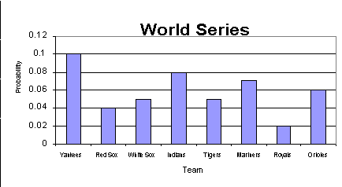

XML Implementation Technology Specification - Data Types
 ANSI/HL7 V3 XMLITSDT, R1-2004 (R2013) HL7 Version 3 Standard: XML Implementation Technology Specification - Data Types, R1 4/8/2004 (reaffirmed 6/7/2013) |
| Responsible Group | Implementable Technology Specifications Work Group HL7 |
| Editor | Gunther Schadow gunther@aurora.rg.iupui.edu Regenstrief Institute for Health Care |
| Editor | Paul Vincent Biron Paul.V.Biron@kp.org Kaiser Permanente |
| Editor | Grahame Grieve grahame@kestral.com.au Kestral Computing P/L |
| Editor | Doug Pratt doug.pratt@smed.com Siemens Medical Solutions, Health Services Co. |
HTML Generated: 2017-05-31T12:34:44
HL7® Version 3 Standard, © 2004 Health Level Seven® International All Rights Reserved.
HL7 and Health Level Seven are registered trademarks of Health Level Seven International. Reg. U.S. Pat & TM Off.
Use of these materials is governed by HL7 International's IP Compliance Policy.
Table of Contents
Prefacei Preface
ii Acknowledgements
1 Introduction
1.1 Organization of this Specification
1.2 Defining the XML Representation of Data Types
1.2.1 template
1.3 Namespaces used in this document
1.4 Use of attributes from XML specifications
2 Basic Data Types
2.1 Data Value (ANY)
2.1.1 XML Representation
2.1.2 Null Flavor : CS
2.1.2.1 XML Representation
2.2 Boolean (BL)
2.2.1 XML Representation
2.2.2 template
2.2.3 Examples
2.2.3.1 example
2.2.3.2 example
2.3 BooleanNonNull (BN)
2.3.1 XML Representation
2.3.2 template
2.4 Binary Data (BIN)
2.4.1 XML Representation
2.4.2 Data : XML Text Content
2.4.2.1 XML Representation
2.4.3 Representation : CS
2.4.3.1 XML Representation
2.5 Encapsulated Data (ED) specializes BIN
2.5.1 XML Representation
2.5.2 template
2.5.3 Data : XML Text Content (inherited from BIN)
2.5.4 XML Representation
2.5.5 Representation : CS (inherited from BIN)
2.5.6 XML Representation
2.5.7 Media Type : CS
2.5.7.1 XML Representation
2.5.8 Charset : CS
2.5.8.1 XML Representation
2.5.9 Language : CS
2.5.9.1 XML Representation
2.5.10 Compression : CS
2.5.10.1 XML Representation
2.5.11 Reference : TEL
2.5.11.1 XML Representation
2.5.12 Integrity Check : BIN
2.5.12.1 XML Representation
2.5.13 Integrity Check Algorithm : CS
2.5.13.1 XML Representation
2.5.14 Thumbnail : ED
2.5.14.1 XML Representation
2.5.14.2 template
2.5.15 Examples
2.5.15.1 example
2.5.15.2 example
2.6 Character String (ST) specializes ED
2.6.1 XML Representation
2.6.2 template
2.6.3 Data : XML Text Content (inherited from BIN)
2.6.4 XML Representation
2.6.5 Representation : CS (inherited from BIN)
2.6.6 XML Representation
2.6.7 Media Type : CS (inherited from ED)
2.6.8 XML Representation
2.6.9 Charset : CS (inherited from ED)
2.6.10 XML Representation
2.6.11 Language : CS (inherited from ED)
2.6.12 XML Representation
2.6.13 Compression : CS (fixed)
2.6.14 XML Representation
2.6.15 Reference : TEL (fixed)
2.6.16 XML Representation
2.6.17 Integrity Check : BIN (fixed)
2.6.18 XML Representation
2.6.19 Integrity Check Algorithm : CS (fixed)
2.6.20 XML Representation
2.6.21 Thumbnail : ED (fixed)
2.6.22 XML Representation
2.6.23 Examples
2.6.23.1 example
2.7 Coded Simple Value (CS) specializes CV
2.7.1 XML Representation
2.7.2 template
2.7.3 Code : ST (inherited from CD)
2.7.4 XML Representation
2.7.5 Code System : UID (fixed)
2.7.6 XML Representation
2.7.7 Code System Name : ST (fixed)
2.7.8 XML Representation
2.7.9 Code System Version : ST (fixed)
2.7.10 XML Representation
2.7.11 Display Name : ST (fixed)
2.7.12 XML Representation
2.7.13 Original Text : ED (fixed)
2.7.14 XML Representation
2.7.15 Examples
2.7.15.1 example
2.7.15.2 example
2.8 Coded Value (CV) specializes CE
2.8.1 XML Representation
2.8.2 template
2.8.3 Code : ST (inherited from CD)
2.8.4 XML Representation
2.8.5 Code System : UID (inherited from CD)
2.8.6 XML Representation
2.8.7 Code System Name : ST (inherited from CD)
2.8.8 XML Representation
2.8.9 Code System Version : ST (inherited from CD)
2.8.10 XML Representation
2.8.11 Display Name : ST (inherited from CD)
2.8.12 XML Representation
2.8.13 Original Text : ED (inherited from CD)
2.8.14 XML Representation
2.8.15 Translation : SET<CD> (fixed)
2.8.16 XML Representation
2.8.17 Examples
2.8.17.1 example
2.8.17.2 example
2.8.17.3 example
2.9 Coded Ordinal (CO) specializes CV
2.9.1 XML Representation
2.9.2 template
2.9.3 Code : ST (inherited from CD)
2.9.4 XML Representation
2.9.5 Code System : UID (inherited from CD)
2.9.6 XML Representation
2.9.7 Code System Name : ST (inherited from CD)
2.9.8 XML Representation
2.9.9 Code System Version : ST (inherited from CD)
2.9.10 XML Representation
2.9.11 Display Name : ST (inherited from CD)
2.9.12 XML Representation
2.9.13 Original Text : ED (inherited from CD)
2.9.14 XML Representation
2.9.15 Translation : SET<CD> (fixed)
2.9.16 XML Representation
2.10 Coded with Equivalents (CE) specializes CD
2.10.1 XML Representation
2.10.2 template
2.10.3 Code : ST (inherited from CD)
2.10.4 XML Representation
2.10.5 Code System : UID (inherited from CD)
2.10.6 XML Representation
2.10.7 Code System Name : ST (inherited from CD)
2.10.8 XML Representation
2.10.9 Code System Version : ST (inherited from CD)
2.10.10 XML Representation
2.10.11 Display Name : ST (inherited from CD)
2.10.12 XML Representation
2.10.13 Qualifier : LIST<CR> (fixed)
2.10.14 XML Representation
2.10.15 Original Text : ED (inherited from CD)
2.10.16 XML Representation
2.10.17 Translation : SET<CD> (inherited from CD)
2.10.18 XML Representation
2.10.19 Examples
2.10.19.1 example
2.11 Concept Descriptor (CD)
2.11.1 XML Representation
2.11.2 template
2.11.3 Code : ST
2.11.3.1 XML Representation
2.11.4 Code System : UID
2.11.4.1 XML Representation
2.11.5 Code System Name : ST
2.11.5.1 XML Representation
2.11.6 Code System Version : ST
2.11.6.1 XML Representation
2.11.7 Display Name : ST
2.11.7.1 XML Representation
2.11.8 Original Text : ED
2.11.8.1 XML Representation
2.11.9 Translation : SET<CD>
2.11.9.1 XML Representation
2.11.10 Qualifier : LIST<CR>
2.11.10.1 XML Representation
2.11.11 Examples
2.11.11.1 example
2.11.11.2 example
2.12 Concept Role (CR)
2.12.1 XML Representation
2.12.2 template
2.12.3 Name : CV
2.12.3.1 XML Representation
2.12.4 Value : CD
2.12.4.1 XML Representation
2.12.5 Inversion Indicator : BN
2.12.5.1 XML Representation
2.12.6 Examples
2.13 Character String with Code (SC) specializes ST
2.13.1 XML Representation
2.13.2 template
2.13.3 Code : ST (inherited from CD)
2.13.4 XML Representation
2.13.5 Code System : UID (inherited from CD)
2.13.6 XML Representation
2.13.7 Code System Name : ST (inherited from CD)
2.13.8 XML Representation
2.13.9 Code System Version : ST (inherited from CD)
2.13.10 XML Representation
2.13.11 Display Name : ST (inherited from CD)
2.13.12 XML Representation
2.14 Unique Identifier String (UID)
2.14.1 XML Representation
2.14.2 ISO Object Identifier (OID) Scheme
2.14.3 DCE Universal Unique Identifier (UUID) Scheme
2.14.4 HL7 Reserved Identifier Scheme
2.14.5 Examples
2.15 Instance Identifier (II)
2.15.1 XML Representation
2.15.2 template
2.15.3 Root : UID
2.15.3.1 XML Representation
2.15.4 Extension : ST
2.15.4.1 XML Representation
2.15.5 Assigning Authority Name : ST
2.15.5.1 XML Representation
2.15.6 Displayable : BL
2.15.6.1 XML Representation
2.15.7 Examples
2.15.7.1 example
2.15.7.2 example
2.15.7.3 example
2.16 Universal Resource Locator (URL)
2.16.1 XML Representation
2.16.2 Telephone and FAX Numbers
2.16.3 Examples
2.17 Telecommunication Address (TEL) specializes URL
2.17.1 XML Representation
2.17.2 template
2.17.3 Useable Period : GTS
2.17.3.1 XML Representation
2.17.4 Use : SET<CS>
2.17.4.1 XML Representation
2.17.5 Examples
2.17.5.1 example
2.17.5.2 example
2.17.5.3 example
2.18 Address Part (ADXP)
2.18.1 XML Representation
2.18.2 template
2.18.3 Data : XML Text Content (inherited from BIN)
2.18.4 XML Representation
2.18.5 Address Part Type : CS
2.18.5.1 XML Representation
2.18.6 Examples
2.19 Postal Address (AD)
2.19.1 XML Representation
2.19.2 template
2.19.3 Use : SET<CS>
2.19.3.1 XML Representation
2.19.4 Useable Period : GTS
2.19.4.1 XML Representation
2.19.5 Is Not Ordered : BL
2.19.5.1 XML Representation
2.19.6 Examples
2.19.6.1 example
2.19.6.2 example
2.19.6.3 example
2.19.6.4 example
2.20 Entity Name Part (ENXP)
2.20.1 XML Representation
2.20.2 template
2.20.3 Data : XML Text Content (inherited from BIN)
2.20.4 XML Representation
2.20.5 Name Part Type : CS
2.20.5.1 XML Representation
2.20.6 Qualifier : SET<CS>
2.20.6.1 XML Representation
2.20.7 Examples
2.21 Entity Name (EN)
2.21.1 XML Representation
2.21.2 template
2.21.3 Use : SET<CS>
2.21.3.1 XML Representation
2.21.4 Valid Time : IVL<TS>
2.21.4.1 XML Representation
2.21.5 Examples
2.22 Person Name (PN) specializes EN
2.22.1 XML Representation
2.22.2 template
2.22.3 Use : SET<CS> (inherited from EN)
2.22.4 XML Representation
2.22.5 Valid Time : IVL<TS> (inherited from EN)
2.22.6 XML Representation
2.22.7 Examples
2.22.7.1 example
2.22.7.2 example
2.22.7.3 example
2.23 Organization Name (ON) specializes EN
2.23.1 XML Representation
2.23.2 template
2.23.3 Use : SET<CS> (inherited from EN)
2.23.4 XML Representation
2.23.5 Valid Time : IVL<TS> (inherited from EN)
2.23.6 XML Representation
2.23.7 Examples
2.23.7.1 example
2.24 Trivial Name (TN) specializes EN
2.24.1 XML Representation
2.24.2 template
2.24.3 Use : SET<CS> (inherited from EN)
2.24.4 XML Representation
2.24.5 Valid Time : IVL<TS> (inherited from EN)
2.24.6 XML Representation
2.24.7 Examples
2.24.7.1 example
2.25 Quantity (QTY)
2.25.1 XML Representation
2.26 Integer Number (INT) specializes QTY
2.26.1 XML Representation
2.26.2 template
2.27 Real Number (REAL) specializes QTY
2.27.1 XML Representation
2.27.2 template
2.28 Physical Quantity (PQ) specializes QTY
2.28.1 XML Representation
2.28.2 template
2.28.3 Value : REAL
2.28.3.1 XML Representation
2.28.4 Unit of Measure : CS
2.28.4.1 XML Representation
2.28.5 Translation : PQR
2.28.5.1 XML Representation
2.28.6 Examples
2.28.6.1 example
2.28.6.2 example
2.29 Physical Quantity Representation (PQR) specializes CV
2.29.1 XML Representation
2.29.2 template
2.29.3 Value : REAL
2.29.3.1 XML Representation
2.29.4 Code : ST (inherited from CD)
2.29.5 XML Representation
2.29.6 Code System : UID (inherited from CD)
2.29.7 XML Representation
2.29.8 Code System Name : ST (inherited from CD)
2.29.9 XML Representation
2.29.10 Code System Version : ST (inherited from CD)
2.29.11 XML Representation
2.29.12 Display Name : ST (inherited from CD)
2.29.13 XML Representation
2.29.14 Original Text : ED (inherited from CD)
2.29.15 XML Representation
2.29.16 Examples
2.30 Monetary Amount (MO) specializes QTY
2.30.1 XML Representation
2.30.2 template
2.30.3 Value : REAL
2.30.3.1 XML Representation
2.30.4 Currency : CS
2.30.4.1 XML Representation
2.30.5 Examples
2.30.5.1 example
2.31 Ratio (RTO) specializes QTY
2.31.1 XML Representation
2.31.2 template
2.31.3 Numerator : QTY
2.31.3.1 XML Representation
2.31.4 Denominator : QTY
2.31.4.1 XML Representation
2.31.5 Examples
2.31.5.1 example
2.31.5.2 example
2.31.5.3 example
2.32 Point in Time (TS) specializes QTY
2.32.1 XML Representation
2.32.2 template
2.32.3 Examples
2.32.3.1 example
2.32.3.2 example
3 Generic Data Types
3.1 Set (SET)
3.1.1 XML Representation
3.1.2 Examples
3.1.2.1 example
3.1.2.2 example
3.1.2.3 example
3.2 Set Component (SXCM)
3.2.1 XML Representation
3.2.2 template
3.2.3 Operator : CS
3.2.3.1 XML Representation
3.2.4 Examples
3.3 Sequence (LIST)
3.3.1 XML Representation
3.3.2 Examples
3.3.2.1 example
3.3.2.2 example
3.4 Generated Sequence (GLIST)
3.4.1 XML Representation
3.4.2 template
3.4.3 Head : T
3.4.3.1 XML Representation
3.4.4 Increment : T.diff
3.4.4.1 XML Representation
3.4.5 Period Step Count : INT
3.4.5.1 XML Representation
3.4.6 Denominator : INT
3.4.6.1 XML Representation
3.4.7 Examples
3.4.7.1 example
3.4.7.2 example
3.5 Sampled Sequence (SLIST)
3.5.1 XML Representation
3.5.2 template
3.5.3 Origin : T
3.5.3.1 XML Representation
3.5.4 Scale Factor : T.diff
3.5.4.1 XML Representation
3.5.5 Sampled Digits : LIST<INT>
3.5.5.1 XML Representation
3.5.6 Examples
3.5.6.1 example
3.6 Bag (BAG)
3.6.1 XML Representation
3.6.2 Examples
3.6.2.1 example
3.7 Bag Item (BXIT)
3.7.1 XML Representation
3.7.2 template
3.7.3 Quantity : INT
3.7.3.1 XML Representation
3.7.4 Examples
3.8 Interval (IVL) specializes SXCM
3.8.1 XML Representation
3.8.2 template
3.8.3 Low Boundary : IVXB
3.8.3.1 XML Representation
3.8.4 High Boundary : IVXB
3.8.4.1 XML Representation
3.8.5 Center : T
3.8.5.1 XML Representation
3.8.6 Width : T.diff
3.8.6.1 XML Representation
3.8.7 Examples
3.8.7.1 example
3.8.7.2 example
3.8.7.3 example
3.9 Interval Boundary (IVXB)
3.9.1 XML Representation
3.9.2 template
3.9.3 Inclusive : BL
3.9.3.1 XML Representation
3.10 History (HIST)
3.10.1 XML Representation
3.11 History Item (HXIT)
3.11.1 XML Representation
3.11.2 template
3.11.3 Valid Time : IVL<TS>
3.11.3.1 XML Representation
3.12 Uncertain Value - Probabilistic (UVP)
3.12.1 XML Representation
3.12.2 template
3.12.3 Probability : REAL
3.12.3.1 XML Representation
3.13 Non-Parametric Probability Distribution (NPPD)
3.13.1 XML Representation
4 Timing Specification
4.1 Periodic Interval of Time (PIVL) specializes SXCM
4.1.1 XML Representation
4.1.2 template
4.1.3 Phase : IVL
4.1.3.1 XML Representation
4.1.4 Period : T.diff
4.1.4.1 XML Representation
4.1.5 Alignment to the Calendar : CS
4.1.5.1 XML Representation
4.1.6 Institution Specified Timing : BL
4.1.6.1 XML Representation
4.1.7 Examples
4.1.7.1 example
4.1.7.2 example
4.1.7.3 example
4.1.7.4 example
4.1.7.5 example
4.2 Event-Related Interval of Time (EIVL) specializes SXCM
4.2.1 XML Representation
4.2.2 template
4.2.3 Event : CS
4.2.3.1 XML Representation
4.2.4 Offset : IVL<T.diff>
4.2.4.1 XML Representation
4.2.5 Examples
4.2.5.1 example
4.2.5.2 example
4.3 Parenthetic Set Expression (SXPR) specializes SXCM
4.3.1 XML Representation
4.3.2 template
4.3.3 Sub-Expression : SXCM
4.3.3.1 XML Representation
4.3.4 Examples
4.3.4.1 example
4.3.4.2 example
Annexes
A Informative Types
A.1 Parametric Probability Distribution (PPD)
A.2 General Timing Specification (GTS)
B W3C XML Schema
B.1 Base Types
B.2 Generic Type Instantiations
This document specifies the HL7 Version 3 Data Types in the context of their XML Implementation Technology Specification (ITS).
This document is based on the Data Types Abstract Specification, which defines the data types on an abstract layer independent from representation.
Vocabulary tables within this specification list the current contents of vocabulary domains for ease of reference by the reader. However, at any given time the normative source for these domains is the vocabulary tables in the RIM database. For some large domains, only a sample of possible values is shown. The complete domains can be referenced in the vocabulary tables by looking up the domain name associated with the table in the RIM vocabulary tables.
The following persons served as co-editors of this document or have otherwise made major contributions to this specification. Wes Rishel (Gartner Group) has driven the initial forumlation of the approach. Paul V. Biron (Kaiser Permanente) has prepared the first ballot draft and continued to be a major support in all XML matters. Douglas Pratt (Siemens) has contributed the initial distillation of the abstract definitions. Gunther Schadow (Regenstrief Institute, Inc.) has done most of the editing, document automation, and maintenance during the many ballot cycles. Major contributions of thought are from Mark Tucker (Regenstrief Institute). Lloyd McKenzie (IBM), and Grahame Grieve (Kestral Computing Pty. Ltd.) have helped in the cleaning up of many aspects of the recent ballot draft.
What is a Data Type? Data types are the basic building blocks used to construct messages, computerized patient record documents, business objects and their transactions. Data types define the meaning of any given field's value. Without knowing a field's data type, it is impossible to interpret the field's value.
Representation of Data Values. On an abstract layer, independent from representation, data types define properties of values. When values are represented, some of their properties are directly represented as atomic literal forms or as data structures. At that point we call those properties "components". On the representation layer we can also distinguish simple data types, represented as atomic literal forms, from complex ones, represented as structures with components. For the implementor, it is important to realize that data types have more properties than shown as components, and that it only depends on the implementation technology and ITS specification what data types are simple or complex and which of their properties are represented as "components" and which are inferred from those components.
This specification defines standard representations for data values in XML only. Other ITS, and programming environments may choose different representations and data structures, all of which must be consistent with the Data Types Abstract Specification.
This specification is divided in two major parts:
- Basic data types
- Generic data types (templates)
The fully specified data types are organized approximately in the same order in which they appear in the Data Types Abstract Specification, divided in roughly three categories: (1) boolean, binary, text and multimedia, (2) codes and identifiers, and (3) quantitative data types.
Generic types are about collections (sets, lists, etc.) and common data type extensions to deal with uncertainty, time-dependency and other qualifications of data values. Finally, the framework of specifying complex timing patterns (e.g., for scheduling periodic activities) is mostly specified in terms of generic data types.
The following table lists all data types specified in the XML ITS.
| Name | Symbol | Description |
|---|---|---|
| Data Value | ANY | Defines the basic properties of every data value. This is an abstract type, meaning that no value can be just a data value without belonging to any concrete type. Every concrete type is a specialization of this general abstract DataValue type. |
| Boolean | BL | The Boolean type stands for the values of two-valued logic. A Boolean value can be either true or false, or, as any other value may be NULL. |
| BooleanNonNull | BN | The BooleanNonNull type is used where a Boolean cannot have a null value. A Boolean value can be either true or false. |
| Binary Data | BIN | Binary data is a raw block of bits. Binary data is a protected type that MUST not be used outside the data type specification. |
| Encapsulated Data | ED | Data that is primarily intended for human interpretation or for further machine processing is outside the scope of HL7. This includes unformatted or formatted written language, multimedia data, or structured information as defined by a different standard (e.g., XML-signatures.) Instead of the data itself, an ED may contain only a reference (see TEL.) Note that the ST data type is a specialization of ED when the mediaType is text/plain. |
| Character String | ST | The character string data type stands for text data, primarily intended for machine processing (e.g., sorting, querying, indexing, etc.) Used for names, symbols, and formal expressions. |
| Coded Simple Value | CS | Coded data in its simplest form, consists of a code. The code system and code system version is fixed by the context in which the CS value occurs. CS is used for coded attributes that have a single HL7-defined value set. |
| Coded Value | CV | Coded data, consists of a code, display name, code system, and original text. Used when a single code value must be sent. |
| Coded Ordinal | CO | Coded data, where the domain from which the codeset comes is ordered. The Coded Ordinal data type adds semantics related to ordering so that models that make use of such domains may introduce model elements that involve statements about the order of the terms in a domain. |
| Coded with Equivalents | CE | Coded data, consists of a coded value (CV) and, optionally, coded value(s) from other coding systems that identify the same concept. Used when alternative codes may exist. |
| Concept Descriptor | CD | A concept descriptor represents any kind of concept usually by giving a code defined in a code system. A concept descriptor can contain the original text or phrase that served as the basis of the coding and one or more translations into different coding systems. A concept descriptor can also contain qualifiers to describe, e.g., the concept of a "left foot" as a postcoordinated term built from the primary code "FOOT" and the qualifier "LEFT". In exceptional cases, the concept descriptor need not contain a code but only the original text describing that concept. |
| Concept Role | CR | A concept qualifier code with optionally named role. Both qualifier role and value codes must be defined by the coding system. For example, if SNOMED RT defines a concept "leg", a role relation "has-laterality", and another concept "left", the concept role relation allows to add the qualifier "has-laterality: left" to a primary code "leg" to construct the meaning "left leg". |
| Character String with Code | SC | An ST that optionally may have a code attached. The text must always be present if a code is present. The code is often a local code. |
| Unique Identifier String | UID | A unique identifier string is a character string which identifies an object in a globally unique and timeless manner. The allowable formats and values and procedures of this data type are strictly controlled by HL7. At this time, user-assigned identifiers may be certain character representations of ISO Object Identifiers (OID) and DCE Universally Unique Identifiers (UUID). HL7 also reserves the right to assign other forms of UIDs (RUID, such as mnemonic identifiers for code systems. |
| Instance Identifier | II | An identifier that uniquely identifies a thing or object. Examples are object identifier for HL7 RIM objects, medical record number, order id, service catalog item id, Vehicle Identification Number (VIN), etc. Instance identifiers are defined based on ISO object identifiers. |
| Universal Resource Locator | URL | A telecommunications address specified according to Internet standard RFC 1738 [RFC 1738]. The URL specifies the protocol and the contact point defined by that protocol for the resource. Notable uses of the telecommunication address data type are for telephone and telefax numbers, e-mail addresses, Hypertext references, FTP references, etc. |
| Telecommunication Address | TEL | A telephone number (voice or fax), e-mail address, or other locator for a resource (information or service) mediated by telecommunication equipment. The address is specified as a URL qualified by time specification and use codes that help in deciding which address to use for a given time and purpose. |
| Address Part | ADXP | A character string that may have a type-tag signifying its role in the address. Typical parts that exist in about every address are street, house number, or post box, postal code, city, country but other roles may be defined regionally, nationally, or on an enterprise level (e.g. in military addresses). Addresses are usually broken up into lines, which are indicated by special line-breaking delimiter elements (e.g., DEL). |
| Postal Address | AD | Mailing and home or office addresses. A sequence of address parts, such as street or post office Box, city, postal code, country, etc. |
| Entity Name Part | ENXP | A character string token representing a part of a name. May have a type code signifying the role of the part in the whole entity name, and a qualifier code for more detail about the name part type. Typical name parts for person names are given names, and family names, titles, etc. |
| Entity Name | EN | A name for a person, organization, place or thing. A sequence of name parts, such as given name or family name, prefix, suffix, etc. Examples for entity name values are "Jim Bob Walton, Jr.", "Health Level Seven, Inc.", "Lake Tahoe", etc. An entity name may be as simple as a character string or may consist of several entity name parts, such as, "Jim", "Bob", "Walton", and "Jr.", "Health Level Seven" and "Inc.", "Lake" and "Tahoe". |
| Person Name | PN | A name for a person. A sequence of name parts, such as given name or family name, prefix, suffix, etc. PN differs from EN because the qualifier type cannot include LS (Legal Status). |
| Organization Name | ON | A name for an organization. A sequence of name parts. |
| Trivial Name | TN | A restriction of entity name that is effectively a simple string used for a simple name for things and places. |
| Quantity | QTY | QTY is an abstract generalization for all data types (1) whose value set has an order relation (less-or-equal) and (2) where difference is defined in all of the data type's totally ordered value subsets. The quantity type abstraction is needed in defining certain other types, such as the interval and the probability distribution. |
| Integer Number | INT | Integer numbers (-1,0,1,2, 100, 3398129, etc.) are precise numbers that are results of counting and enumerating. Integer numbers are discrete, the set of integers is infinite but countable. No arbitrary limit is imposed on the range of integer numbers. Two NULL flavors are defined for the positive and negative infinity. |
| Real Number | REAL | Fractional numbers. Typically used whenever quantities are measured, estimated, or computed from other real numbers. The typical representation is decimal, where the number of significant decimal digits is known as the precision. Real numbers are needed beyond integers whenever quantities of the real world are measured, estimated, or computed from other real numbers. The term "Real number" in this specification is used to mean that fractional values are covered without necessarily implying the full set of the mathematical real numbers. |
| Physical Quantity | PQ | A dimensioned quantity expressing the result of a measurement act. |
| Physical Quantity Representation | PQR | A representation of a physical quantity in a unit from any code system. Used to show alternative representation for a physical quantity. |
| Monetary Amount | MO | A monetary amount is a quantity expressing the amount of money in some currency. Currencies are the units in which monetary amounts are denominated in different economic regions. While the monetary amount is a single kind of quantity (money) the exchange rates between the different units are variable. This is the principle difference between physical quantity and monetary amounts, and the reason why currency units are not physical units. |
| Ratio | RTO | A quantity constructed as the quotient of a numerator quantity divided by a denominator quantity. Common factors in the numerator and denominator are not automatically cancelled out. RTO supports titers (e.g., "1:128") and other quantities produced by laboratories that truly represent ratios. Ratios are not simply "structured numerics", particularly blood pressure measurements (e.g. "120/60") are not ratios. In many cases REAL should be used instead of RTO. |
| Point in Time | TS | A quantity specifying a point on the axis of natural time. A point in time is most often represented as a calendar expression. |
| Set | SET | A value that contains other distinct values in no particular order. |
| Set Component | SXCM | An ITS-defined generic type extension for the base data type of a set, representing a component of a general set over a discrete or continuous value domain. Its use is mainly for continuous value domains. Discrete (enumerable) set components are the individual elements of the base data type. |
| Sequence | LIST | A value that contains other discrete values in a defined sequence. |
| Generated Sequence | GLIST | A periodic or monotone sequence of values generated from a few parameters, rather than being enumerated. Used to specify regular sampling points for biosignals. |
| Sampled Sequence | SLIST | A sequence of sampled values scaled and translated from a list of integer values. Used to specify sampled biosignals. |
| Bag | BAG | An unordered collection of values, where each value can be contained more than once in the bag. |
| Bag Item | BXIT | An ITS-defined generic data type extension that represents a collection of a certain number of identical items in a bag. |
| Interval | IVL | A set of consecutive values of an ordered base data type. |
| Interval Boundary | IVXB | An ITS-defined generic type extension representing the boundary value for an interval. |
| History | HIST | A set of data values that conform to the history item (HXIT) type, (i.e., that have a valid-time property). The history information is not limited to the past; expected future values can also appear. |
| History Item | HXIT | A generic data type extension that tags a time range to any data value of any data type. The time range is the time in which the information represented by the value is (was) valid. |
| Uncertain Value - Probabilistic | UVP | A generic data type extension used to specify a probability expressing the information producer's belief that the given value holds. |
| Non-Parametric Probability Distribution | NPPD | A set of uncertain values with probabilities (also known as a histogram). |
| Periodic Interval of Time | PIVL | An interval of time that recurs periodically. Periodic intervals have two properties, phase and period. The phase specifies the "interval prototype" that is repeated every period. |
| Event-Related Interval of Time | EIVL | Specifies a periodic interval of time where the recurrence is based on activities of daily living or other important events that are time-related but not fully determined by time. |
| Parenthetic Set Expression | SXPR | A set-component that is itself made up of set-components that are evaluated as one value. |
| Parametric Probability Distribution | PPD | A generic data type extension specifying uncertainty of quantitative data using a distribution function and its parameters. Aside from the specific parameters of the distribution, a mean (expected value) and standard deviation is always given to help maintain a minimum layer of interoperability if receiving applications cannot deal with a certain probability distribution. |
| General Timing Specification | GTS | A set of points in time, specifying the timing of events and actions and the cyclical validity-patterns that may exist for certain kinds of information, such as phone numbers (evening, daytime), addresses (so called "snowbirds," residing closer to the equator during winter and farther from the equator during summer) and office hours. |
Element and Attibute Forms
Data types may be represented in either an Element form or an abbreviated Attribute form. The context where the data type is used will define which form is to be used.
In the Element form, which is the normal case, the data type is represented using an XML elment. This is usually encountered for high-level HL7 content derived from the Reference Information Model (RIM).
In the abbreviated Attribute form, the data type is represented by a single XML attribute. This form is used when the data type is a property of other data types or when the data type is used in a Stuctutral RIM attribute. If an Attribute form is allowed, it is defined in the narrative.
Any data types represented in an Attribute form cannot convey any form of null flavor. If the attribute is not present in the XML instance then the data type has a null flavor of NI.
This standard specifies the XML representation for the HL7 data types. The XML representation is described in several different ways:
- Narrative
- Template
XML Templates
The XML Template format used in this document has been adapted from the format used in the W3C XML Schema specification.
This example template shows the attributes and elements for the ED and EN types. The template describes a set of XML attributes and elements that may be used to represent the semantics of the data type described in the Data Types Abstract Specification. There may not be a direct mapping between the XML attributes and elements and the properties of the type described in the Data Types Abstract Specification. If the name of the XML attribute or element matches a property name in the Data Types Abstract Specification then the semantics of the content will be as described in the Data Types Abstract Specification, otherwise the narrative will explain the use of the attribute or element.
This specification describes types, not elements, so the element name for a given type is not known. The character x is used in place of the element name, which will be determined by the context in which the type is used, either in this specification, or the name of the RIM attribute.
For each attribute, the XML name of the attribute is shown, followed by either a set of possible values or a type name. Allowed values are shown separated by vertical bars between parentheses. A default value, if applicable, is specified following a colon. If the attribute is assigned a type, then it is represented using the Attribute format described for the specified type. Some attributes are given the type CS*. For these attributes, the valid content is a whitespace separated list of CS codes.
For the element and text content, only the element names are shown. The type of the elements is described in the narrative associated with the type. The presence of a * denotes that the element or set of elements grouped by parentheses may appear more than once.
Some types may contain text data. This is represented using #PCDATA. Any text content must be properly escaped character content with no markup.
All attributes and elements are optional. If an attribute or element is not present, then the data type property it represents has the nullFlavor NI. Although all attributes and elements are optional, the datatype represented in the XML instance must be a valid instance of the datatype - it must meet all the constraints and specifications from the Data Types Abstract Specification.
The rules which determine which data types can be substituted for other data types are defined in the Data Types Abstract Specification.
Validation against Schema and Predicates
HL7 artefact processing systems are not required to validate any HL7 XML data type representations against any schema or XPath predicates. Systems may wish to perform schema validation to gain access to the Post Schema Validation Instance [Post Schema Validation Instance], but there will be no requirement to do this in order to properly understand the message, though all systems must be aware of the default values that are not represented in the instance by some means.
Note: All XML data type representations must conform to this specification irrespective of whether validation by schema or any other method is being performed.
Note: No existing technology for validating XML is able to completely validate the HL7 data types as represented in XML.
| xml | http://www.w3.org/XML/1998/namespace | xml namespace defined in Namespaces in XML [http://www.w3.org/TR/1999/REC-xml-names-19990114] |
| xs | http://www.w3.org/2001/XMLSchema | W3C Schema namespace defined in XML Schema Part 1: Structures [http://www.w3.org/TR/2001/REC-xmlschema-1-20010502] |
| xsi | http://www.w3.org/2001/XMLSchema-instance | W3C Schema namespace defined in XML Schema Part 1: Structures [http://www.w3.org/TR/2001/REC-xmlschema-1-20010502] |
| hl7 | urn:hl7-org:v3 | HL7 defined namespace for V3 |
The W3C XML specifications define several attributes in w3c namespaces that carry particular meaning when processing XML documents. This section documents the usage for several such attributes. Other attributes not described in this section may be used but HL7 artefact processing systems are not required to attach any meaning to them beyond that required in the context of processing the XML containing the HL7 artefacts.
xml:lang is not used. HL7 uses it's own attribute to convey the HL7 langauge property. This is done for several reasons. Many existing tools do not properly support xml:lang, and using xml:lang provides no useful outcomes. In addition, using a CS instead of xml:lang provides clear support for the realm variation by international HL7 affiliates. Note that at present, the codeset of language is identical to that of xml:lang so it is possible to transform from one to the other.
xsi:schemaLocation must not be used in an instance to point to a schema document to be used for validation. Instance processors are expected to provide their own schemas.
xsi:type is required when:
- The type of the RIM attribute is ANY, RTO, or QTY
- An instance of an SC is being sent as a promotion of an ST
xsi:type may be used at other times according to the XML Schema specification.
When xsi:type is used to describe a data type defined in this specification, the correct type name is the value of the "Symbol" column for the type as given in Overview of HL7 version 3 data types in the hl7 namespace.
For generic types, the type names of the parameter types are appended to the generic type with an underscore between, so that an IVL<TS> becomes IVL_TS. No ambiguities arise with this naming scheme due to the way that the data types have been defined.
Definition: Defines the basic properties of every data value. This is an abstract type, meaning that no value can be just a data value without belonging to any concrete type. Every concrete type is a specialization of this general abstract DataValue type.
ANY is an abstract datatype and may not be used directly; hence, ANY has no XML representation.
Definition: An exceptional value expressing missing information and possibly the reason why the information is missing.
Every data element has either a proper value or it is considered NULL. If and only if it is NULL, a "null flavor" provides more detail as to in what way or why no proper value is supplied.
| code | name | definition |
|---|---|---|
| NI | NoInformation | No information whatsoever can be inferred from this exceptional value. This is the most general exceptional value. It is also the default exceptional value. |
| OTH | other | The actual value is not an element in the value domain of a variable. (e.g., concept not provided by required code system). |
| NINF | negative infinity | Negative infinity of numbers. |
| PINF | positive infinity | Positive infinity of numbers. |
| UNK | unknown | A proper value is applicable, but not known. |
| ASKU | asked but unknown | Information was sought but not found (e.g., patient was asked but didn't know) |
| NAV | temporarily unavailable | Information is not available at this time but it is expected that it will be available later. |
| NASK | not asked | This information has not been sought (e.g., patient was not asked) |
| TRC | trace | The content is greater than zero, but too small to be quantified. |
| MSK | masked | There is information on this item available but it has not been provided by the sender due to security, privacy or other reasons. There may be an alternate mechanism for gaining access to this information.Note: using this null flavor does provide information that may be a breach of confidentiality, even though no detail data is provided. Its primary purpose is for those circumstances where it is necessary to inform the receiver that the information does exist without providing any detail. |
| NA | not applicable | No proper value is applicable in this context (e.g., last menstrual period for a male). |
| NP | not present | Value is not present in a message. This is only defined in messages, never in application data! All values not present in the message must be replaced by the applicable default, or no-information (NI) as the default of all defaults. |
nullFlavor is represented by the XML attributenullFlavor whose value, if present, must be a valid value from the NullFlavor domain (Domain NullFlavor).
Definition: The Boolean type stands for the values of two-valued logic. A Boolean value can be either true or false, or, as any other value may be NULL.
All Boolean values obey the common operators negation, conjunction, and disjunction. With the NULL value these common Boolean operations are extended as shown in the following tables.
| NOT | AND | true | false | NULL | OR | true | false | NULL | |||
|---|---|---|---|---|---|---|---|---|---|---|---|
| true | false | true | true | false | NULL | true | true | true | true | ||
| false | true | false | false | false | false | false | true | false | NULL | ||
| NULL | NULL | NULL | NULL | false | NULL | NULL | true | NULL | NULL |
BL is represented by both Element and Attribute forms. In the Element form, the name of the element is determined by the context in which it is used. The element has attributes as described in the template and the sub-sections below.
XML instances may carry either a nullFlavor or a value, but not both.
The Attribute form of BL is used when properties of other data types have type BL. The name of the attribute is determined by the context in which it is used. The attribute must have the value true or false.
The first example shows true and false negation and context conduction indicators.
The second example shows the use of true and false inclusive interval boundaries.
Definition: The BooleanNonNull type is used where a Boolean cannot have a null value. A Boolean value can be either true or false.
BN is represented by both Element and Attribute forms. In the Element form, the name of the element is determined by the context in which it is used. The element has attributes as described in the template and the sub-sections below.
XML instances must carry a value.
The Attribute form of BN is used when properties of other data types have type BN. The name of the attribute is determined by the context in which it is used and whose value is either true or false. Unless the value has a default property the attribute must be present.
Definition: Binary data is a raw block of bits. Binary data is a protected type that MUST not be used outside the data type specification.
| Name | Type | Description |
|---|---|---|
| data | XML Text Content | The data itself represented in the XML instance encoding according to the binary data representation element (text or base64 form.) ST and types that specialize ST use only the text representation. |
| representation | CS | Specifies the representation of the binary data that is the content of the binary data value. |
BIN is represented by both Element and Attribute forms. The Element form serves as the basis of the encapsulated data type, used for both written text and multimedia (binary data). When an element is defined to be of type that property is represented as the character data (e.g., #PCDATA) content of the element in question.
The Attribute form of BIN is used when properties of other data types have type BIN (e.g., ED.integrityCheck). The name of the XML attribute is determined by the name of the property in question. The value of the XML attribute must be the base64 encoding [base64 encoding] of the binary data.
Definition: The data itself represented in the XML instance encoding according to the binary data representation element (text or base64 form.) ST and types that specialize ST use only the text representation.
data is represented as the text content of the XML element representing the BIN value, whose value, if present must be the base64 encoding of the actual value.
Definition: Specifies the representation of the binary data that is the content of the binary data value.
BIN in the Data Types Abstract Specification does not have a representation property since, for HL7's purposes, representation is not a meaningful property of data. Therefore applications need not retain the representation.
representation is represented by the XML attributerepresentation whose value, if present, must be TXT or B64. The default value is TXT.
TXT indicates that the character data of the BIN is to be interpreted directly as characters; B64 indicates that the BIN data has been base64 encoded and must be decoded in order to recover the original data.
Definition: Data that is primarily intended for human interpretation or for further machine processing is outside the scope of HL7. This includes unformatted or formatted written language, multimedia data, or structured information as defined by a different standard (e.g., XML-signatures.) Instead of the data itself, an ED may contain only a reference (see TEL.) Note that the ST data type is a specialization of ED when the mediaType is text/plain.
| Name | Type | Description |
|---|---|---|
| data | XML Text Content | The data itself represented in the XML instance encoding according to the binary data representation element (text or base64 form.) ST and types that specialize ST use only the text representation. |
| representation | CS | Specifies the representation of the binary data that is the content of the binary data value. |
| mediaType | CS | Identifies the type of the encapsulated data and identifies a method to interpret or render the data. |
| charset | CS | For character-based encoding types, this property specifies the character set and character encoding used. The charset shall be identified by an Internet Assigned Numbers Authority (IANA) Charset Registration [Charset Registration] in accordance with RFC 2978 [RFC 2978]. |
| language | CS | For character based information the language property specifies the human language of the text. |
| compression | CS | Indicates whether the raw byte data is compressed, and what compression algorithm was used. |
| reference | TEL | A telecommunication address (TEL), such as a URL for HTTP or FTP, which will resolve to precisely the same binary data that could as well have been provided as inline data. |
| integrityCheck | BIN | The integrity check is a short binary value representing a cryptographically strong checksum that is calculated over the binary data. The purpose of this property, when communicated with a reference is for anyone to validate later whether the reference still resolved to the same data that the reference resolved to when the encapsulated data value with reference was created. |
| integrityCheckAlgorithm | CS | Specifies the algorithm used to compute the integrityCheck value. |
| thumbnail | ED | A thumbnail is an abbreviated rendition of the full data. A thumbnail requires significantly fewer resources than the full data, while still maintaining some distinctive similarity with the full data. A thumbnail is typically used with by-reference encapsulated data. It allows a user to select data more efficiently before actually downloading through the reference. |
Encapsulated data can be present in one of two forms, inline or by reference. Inline data is communicated or moved as part of the encapsulated data value, whereas by-reference data may reside at a different (remote) location. The data is the same whether it is located inline or remote.
ED is always represented in Element form as described in the template and sub-sections below. The binary data is conveyed as inline character content. Alternatively addition ED can contain the data as XML markup. In these cases the mediaType is expected to describe some form of XML markup, and the content must be well-formed XML contained in a single element in the ED content. If the in-line content is HTML or SGML, it must be well-formed XML or it must be represented as escaped or base64 encoded character content.
Markup contained in an ED can come from any namespace other than the HL7 V3 namespace (urn:hl7-org:v3) without restriction. Additionally, any element in the HL7 namespace that represents an interaction or the root of a CDA document may also appear. The reason for this restriction on elements from the HL7 namespace is to help support those who choose to do optional XML Schema processing. It would not be possible to write a schema definition that would allow arbitrary content from the HL7 namespace since that would result in a violation of Schema Component Constraint: Unique Particle Attribution.
Because inline data for ED (and its restricted form, ST) may be encoded as character data, and the content model also includes a thumbnail and reference element, ED has mixed content. An instance of ED may only contain at most one text node.
Definition: The data itself represented in the XML instance encoding according to the binary data representation element (text or base64 form.) ST and types that specialize ST use only the text representation.
data is represented as the text content of the XML element representing the ED value.
Definition: Specifies the representation of the binary data that is the content of the binary data value.
representation is represented by the XML attributerepresentation whose value must either TXT or B64.
Definition: Identifies the type of the encapsulated data and identifies a method to interpret or render the data.
The IANA defined domain of media types is established by the Internet standard RFC 2046 [RFC 2046].
To promote interoperability, this specification prefers certain media types to others. This is to define a greatest common denominator on which interoperability is not only possible, but that is powerful enough to support even advanced multimedia communication needs.
Domain MediaType below assigns a status to certain MIME media types, where the status means one of the following:
required: Every HL7 application must support at least the required media types if it supports a given kind of media. One required media-type for each kind of media exists. Some media types are required for a specific purpose, which is then indicated as "required for ..."
recommended: Other media types are recommended for a particular purpose. For any given purpose there should be only very few additionally recommended media types and the rationale, conditions and assumptions of such recommendations must be made very clear.
indifferent: This status means, HL7 does neither forbid nor endorse the use of this media type. All media types not mentioned here by default belong into the indifferent category. Since there is one required and several recommended media types for most practically relevant use cases, media types of this status should be used very conservatively.
deprecated: Deprecated media types should not be used, because these media types are flawed, because there are better alternatives, or because of certain risks. Such risks could be security risks, for example, the risk that such a media type could spread computer viruses. Not every flawed media type is marked as deprecated, though. A media type that is not mentioned, and thus considered other by default, may well be flawed.
| code | name | status | definition |
|---|---|---|---|
| text/plain | Plain Text | required | For any plain text. This is the default and is equivalent to a character string (ST) data type. |
| text/html | HTML Text | recommended | For marked-up text according to the Hypertext Mark-up Language. HTML markup is sufficient for typographically marking-up most written-text documents. HTML is platform independent and widely deployed. |
| text/x-hl7-ft | HL7 Text | recommended | For compatibility, this represents the HL7 v2.x FT data type. Its use is recommended only for backward compatibility with HL7 v2.x systems. |
| text/xml | XML Text | indifferent | For structured character based data. There is a risk that general SGML/XML is too powerful to allow a sharing of general SGML/XML documents between different applications. |
| text/rtf | RTF Text | indifferent | The Rich Text Format is widely used to share word-processor documents. However, RTF does have compatibility problems, as it is quite dependent on the word processor. May be useful if word processor edit-able text should be shared. |
| text/sgml | SGML Text | indifferent | For structured character based data. There is a risk that general SGML/XML is too powerful to allow a sharing of general SGML/XML documents between different applications. |
| image/png | PNG Image | required | Portable Network Graphics (PNG) [http://www.cdrom.com/pub/png] is a widely supported lossless image compression standard with open source code available. |
| image/jpeg | JPEG Image | required | This format is required for high compression of high color photographs. It is a "lossy" compression, but the difference to lossless compression is almost unnoticeable to the human vision. |
| image/g3fax | G3Fax Image | recommended | This is recommended only for fax applications. |
| image/gif | GIF Image | indifferent | GIF is a popular format that is universally well supported. However GIF is patent encumbered and should therefore be used with caution. |
| image/tiff | TIFF Image | indifferent | Although TIFF (Tag Image File Format) is an international standard it has many interoperability problems in practice. Too many different versions that are not handled by all software alike. |
| audio/basic | Basic Audio | required | This is a format for single channel audio, encoded using 8bit ISDN mu-law [PCM] at a sample rate of 8000 Hz. This format is standardized by: CCITT, Fascicle III.4 -Recommendation G.711. Pulse Code Modulation (PCM) of Voice Frequencies. Geneva, 1972. |
| audio/mpeg | MPEG audio layer 3 | required | MPEG-1 Audio layer-3 is an audio compression algorithm and file format defined in ISO 11172-3 and ISO 13818-3. MP3 has an adjustable sampling frequency for highly compressed telephone to CD quality audio. |
| audio/k32adpcm | K32ADPCM Audio | indifferent | ADPCM allows compressing audio data. It is defined in the Internet specification RFC 2421 [ftp://ftp.isi.edu/in-notes/rfc2421.txt]. Its implementation base is unclear. |
| video/mpeg | MPEG Video | required | MPEG is an international standard, widely deployed, highly efficient for high color video; open source code exists; highly interoperable. |
| video/x-avi | X-AVI Video | deprecated | The AVI file format is just a wrapper for many different codecs; it is a source of many interoperability problems. |
| model/vrml | VRML Model | recommended | This is an openly standardized format for 3D models that can be useful for virtual reality applications such as anatomy or biochemical research (visualization of the steric structure of macromolecules) |
| application/pdf | recommended | The Portable Document Format is recommended for written text that is completely laid out and read-only. PDF is a platform independent, widely deployed, and open specification with freely available creation and rendering tools. | |
| application/dicom | DICOM | recommended | Digital Imaging and Communications in Medicine (DICOM) MIME type defined in RFC3240 [http://ietf.org/rfc/rfc3240.txt]. |
| application/msword | MSWORD | deprecated | This format is very prone to compatibility problems. If sharing of edit-able text is required, text/plain, text/html or text/rtf should be used instead. |
| multipart/x-hl7-cda-level1 | CDA Level 1 Multipart | recommended | The HL7 clinical document Architecture, Level 1 MIME package. |
The set of required media types is very small so that no undue requirements are forced on HL7 applications, especially legacy systems. In general, no HL7 application is forced to support any given kind of media other than written text. For example, many systems just do not want to receive audio data, because those systems can only show written text to their users. It is a matter of application conformance statements to say: "I will not handle audio". Only if a system claims to handle audio media, it must support the required media type for audio.
mediaType is represented by the XML attributemediaType whose value, if present, must be a valid mediaType as specified by the Internet standard RFC 2046 [RFC 2046]. The default value is text/plain.
Definition: For character-based encoding types, this property specifies the character set and character encoding used. The charset shall be identified by an Internet Assigned Numbers Authority (IANA) Charset Registration [Charset Registration] in accordance with RFC 2978 [RFC 2978].
charset is not explicitly represented in the XML ITS. Rather, the value of charset is to be inferred from the encoding used in the XML entity in which the ED value is contained.
Definition: For character based information the language property specifies the human language of the text.
The HL7 table for human languages is based on RFC 3066, Tags for the Identification of Languages [RFC 3066]. It is a set of pre-coordinated pairs of one 2-letter ISO 639 language code and one 2-letter ISO 3166 country code (e.g., en-us [English, United States]).
Language tags do not modify the meaning of the characters found in the text; they are only an advice on if and how to present or communicate the text. For this reason, any system or site that does not deal with multilingual text or names in the real world can safely ignore the language property.
language is represented by the XML attributelanguage whose value, if present, must be a valid language tag as defined by RFC 3066 [RFC 3066].
Definition: Indicates whether the raw byte data is compressed, and what compression algorithm was used.
| code | name | status | definition |
|---|---|---|---|
| DF | deflate | required | The deflate compressed data format as specified in RFC 1951 [http://www.ietf.org/rfc/rfc1951.txt]. |
| GZ | gzip | indifferent | A compressed data format that is compatible with the widely used GZIP utility as specified in RFC 1952 [http://www.ietf.org/rfc/rfc1952.txt] (uses the deflate algorithm). |
| ZL | zlib | indifferent | A compressed data format that also uses the deflate algorithm. Specified as RFC 1950 [http://www.ietf.org/rfc/rfc1952.txt] |
| Z | compress | deprecated | Original UNIX compress algorithm and file format using the LZC algorithm (a variant of LZW). Patent encumbered and less efficient than deflate. |
compression is represented as the XML attributecompression whose value, if present, must be a valid value from the CompressionAlgorithm domain (Domain CompressionAlgorithm). There is no compression by default.
Definition: A telecommunication address (TEL), such as a URL for HTTP or FTP, which will resolve to precisely the same binary data that could as well have been provided as inline data.
The semantic value of an encapsulated data value is the same, regardless whether the data is present inline data or just by-reference. However, an encapsulated data value without inline data behaves differently, since any attempt to examine the data requires the data to be downloaded from the reference.
An encapsulated data value may have both inline data and a reference. The reference must point to the same data as provided inline.
reference is represented as the XML elementreference which, if present, must be a valid TEL.
Definition: The integrity check is a short binary value representing a cryptographically strong checksum that is calculated over the binary data. The purpose of this property, when communicated with a reference is for anyone to validate later whether the reference still resolved to the same data that the reference resolved to when the encapsulated data value with reference was created.
The integrity check is calculated according to the integrity check algorithm. By default, the Secure Hash Algorithm-1 (SHA-1) shall be used. The integrity check is binary encoded according to the rules of the integrity check algorithm.
The integrity check is calculated over the raw binary data that is contained in the data component, or that is accessible through the reference. No transformations are made before the integrity check is calculated. If the data is compressed, the Integrity Check is calculated over the compressed data.
integrityCheck is represented by the XML attributeintegrityCheck whose value, if present, must be a valid BIN. There is no default value.
When generating instances, applications must base64 encode the integrity check prior to populating the XML attributeintegrityCheck. When receiving instances, applications must base64 decode the value of the XML attributeintegrityCheck to obtain the integrity check value.
Definition: Specifies the algorithm used to compute the integrityCheck value.
| code | name | definition |
|---|---|---|
| SHA-1 | secure hash algorithm - 1 | This algorithm is defined in FIPS PUB 180-1: Secure Hash Standard. As of April 17, 1995. |
| SHA-256 | secure hash algorithm - 256 | This algorithm is defined in FIPS PUB 180-2: Secure Hash Standard. |
integrityCheckAlgorithm is represented by the XML attributeintegrityCheckAlgorithm whose value must be a valid value from the IntegrityCheckAlgorithm domain (Domain IntegrityCheckAlgorithm). The default value is SHA-1.
Definition: A thumbnail is an abbreviated rendition of the full data. A thumbnail requires significantly fewer resources than the full data, while still maintaining some distinctive similarity with the full data. A thumbnail is typically used with by-reference encapsulated data. It allows a user to select data more efficiently before actually downloading through the reference.
For example, a large image may be represented by a small image; a high quality audio sequence by a shorter low-quality audio; a movie may be represented by a shorter clip (or just an image); text may be summarized to an abstract.
A thumbnail may not itself contain a thumbnail.
thumbnail is represented as the XML elementthumbnail which, if present, is a restricted form of ED that does not allow thumbnail children.
The first example shows an Adobe Acrobat document that has been compressed using the GZip compression algorithm.
The next example contains a reference to an image, stored at particular URL and available for the next month. An integrity check is provided for the image, as well as in inline thumbnail.
Definition: The character string data type stands for text data, primarily intended for machine processing (e.g., sorting, querying, indexing, etc.) Used for names, symbols, and formal expressions.
| Name | Type | Description |
|---|---|---|
| data | XML Text Content | The data itself represented in the XML instance encoding. |
| representation | CS | Specifies the representation of the binary data that is the content of the binary data value. |
| mediaType | CS | Identifies the type of the encapsulated data and identifies a method to interpret or render the data. |
| charset | CS | For character-based encoding types, this property specifies the character set and character encoding used. The charset shall be identified by an Internet Assigned Numbers Authority (IANA) Charset Registration [Charset Registration] in accordance with RFC 2978 [RFC 2978]. |
| language | CS | For character based information the language property specifies the human language of the text. |
A character string must at least have one character or else it is NULL. The length of a string is the number of characters, not the number of encoded bytes.
ST interprets the encapsulated data as character data (as opposed to bits), depending on the charset property. In other words, the string S1 "Rose" is equal to the string S2 "Rose" even if S1 is ASCII encoded (hex '526f7365') and S2 is EBCDIC encoded (hex 'd996a285') or UTF-16 encoded (hex '0052006f00730065').
ST is represented by both Element and Attribute forms. In the Element form, the name of the XML element is determined by the context in which it is used. The element has attributes as described in the template and sub-sections below.
The Attribute form of ST is used when properties of other data types have type ST. The name of the attribute is determined by the context in which it is used. The value of the attribute is the content of the string.
Definition: The data itself represented in the XML instance encoding.
data is represented as the text content of the XML element representing the ST value.
Definition: Specifies the representation of the binary data that is the content of the binary data value.
representation is represented by the XML attributerepresentation whose value, if present, must be TXT. Since the representation always has a fixed value, it is not normally present in the XML instance.
Definition: Identifies the type of the encapsulated data and identifies a method to interpret or render the data.
mediaType is represented by the XML attributemediaType whose value, if present, must be text/plain. Since the media type always has a fixed value, it is not normally present in the XML instance.
Definition: For character-based encoding types, this property specifies the character set and character encoding used. The charset shall be identified by an Internet Assigned Numbers Authority (IANA) Charset Registration [Charset Registration] in accordance with RFC 2978 [RFC 2978].
charset is not explicitly represented in the XML ITS. Rather, the value of charset is to be inferred from the encoding used in the XML entity in which the ST value is contained.
Definition: For character based information the language property specifies the human language of the text.
language is represented by the XML attributelanguage whose value, if present, must be a valid language tag as defined by RFC 3066 [RFC 3066].
Definition: Indicates whether the raw byte data is compressed, and what compression algorithm was used.
compression is inherited from an ancestor data type but does not appear in the XML representation of this data type.
reference is inherited from an ancestor data type but does not appear in the XML representation of this data type.
Definition: The integrity check is a short binary value representing a cryptographically strong checksum that is calculated over the binary data. The purpose of this property, when communicated with a reference is for anyone to validate later whether the reference still resolved to the same data that the reference resolved to when the encapsulated data value with reference was created.
integrityCheck is inherited from an ancestor data type but does not appear in the XML representation of this data type.
Definition: Specifies the algorithm used to compute the integrityCheck value.
integrityCheckAlgorithm is inherited from an ancestor data type but does not appear in the XML representation of this data type.
Definition: A thumbnail is an abbreviated rendition of the full data. A thumbnail requires significantly fewer resources than the full data, while still maintaining some distinctive similarity with the full data. A thumbnail is typically used with by-reference encapsulated data. It allows a user to select data more efficiently before actually downloading through the reference.
thumbnail is inherited from an ancestor data type but does not appear in the XML representation of this data type.
Definition: Coded data in its simplest form, consists of a code. The code system and code system version is fixed by the context in which the CS value occurs. CS is used for coded attributes that have a single HL7-defined value set.
| Name | Type | Description |
|---|---|---|
| code | ST | The plain code symbol defined by the code system. For example, "784.0" is the code symbol of the ICD-9 code "784.0" for headache. |
CS is represented by both Element and Attribute forms. In the Element form, the type is represented by an XML element whose name is determined by the context in which it is used. The code value is represented by an XML attributecode, whose value, if present, must be a valid xs:token with no internal whitespace.
In the Attribute form, code is represented as an XML attribute whose name is determined by the context in which it is used, and whose value, if present, must be a valid xs:token with no internal whitespace.
Definition: The plain code symbol defined by the code system. For example, "784.0" is the code symbol of the ICD-9 code "784.0" for headache.
code is represented by the XML attributecode whose value, if present, must be a valid xs:token with no internal whitespace.
Definition: Specifies the code system that defines the code.
codeSystem is inherited from an ancestor data type but does not appear in the XML representation of this data type.
The fact that a sending system is prohibited from specifying a code system for an CS data value should not be misconstrued as if such codes would not have any code system. Rather, the code system in CS values is fixed by the context. That context is defined by the model in which CS is used.
Definition: A common name of the coding system.
codeSystemName is inherited from an ancestor data type but does not appear in the XML representation of this data type.
Definition: If applicable, a version descriptor defined specifically for the given code system.
codeSystemVersion is inherited from an ancestor data type but does not appear in the XML representation of this data type.
Definition: A name or title for the code, under which the sending system shows the code value to its users.
displayName is inherited from an ancestor data type but does not appear in the XML representation of this data type.
Definition: The text or phrase used as the basis for the coding.
originalText is inherited from an ancestor data type but does not appear in the XML representation of this data type.
Definition: Coded data, consists of a code, display name, code system, and original text. Used when a single code value must be sent.
| Name | Type | Description |
|---|---|---|
| code | ST | The plain code symbol defined by the code system. For example, "784.0" is the code symbol of the ICD-9 code "784.0" for headache. |
| codeSystem | UID | Specifies the code system that defines the code. |
| codeSystemName | ST | A common name of the coding system. |
| codeSystemVersion | ST | If applicable, a version descriptor defined specifically for the given code system. |
| displayName | ST | A name or title for the code, under which the sending system shows the code value to its users. |
| originalText | ED | The text or phrase used as the basis for the coding. |
CV is always represented in Element form as described in the template and sub-sections below.
Definition: The plain code symbol defined by the code system. For example, "784.0" is the code symbol of the ICD-9 code "784.0" for headache.
code is represented by the XML attributecode whose value, if present, must be a valid xs:token with no internal whitespace.
Definition: Specifies the code system that defines the code.
codeSystem is represented by the XML attributecodeSystem whose value, if present, must be a valid UID.
Definition: A common name of the coding system.
codeSystemName is represented by the XML attributecodeSystemName whose value, if present, must be a valid ST.
Definition: If applicable, a version descriptor defined specifically for the given code system.
codeSystemVersion is represented by the XML attributecodeSystemVersion whose value, if present, must be a valid ST.
Definition: A name or title for the code, under which the sending system shows the code value to its users.
displayName is represented by the XML attributedisplayName whose value, if present, must be a valid ST.
Definition: The text or phrase used as the basis for the coding.
originalText is represented by the XML elementoriginalText which, if present, must be a valid ED.
Definition: A set of other concept descriptors that translate this concept descriptor into other code systems.
translation is inherited from an ancestor data type but does not appear in the XML representation of this data type.
The first example shows the LOINC code for "consultation note".
The second example shows a SNOMED-CT code with CD.originalText for "osteoarthritis of the right knee".
The final example shows the use of nullFlavor='OTHER' to indicate that a code does not exist in a coding system.
Definition: Coded data, where the domain from which the codeset comes is ordered. The Coded Ordinal data type adds semantics related to ordering so that models that make use of such domains may introduce model elements that involve statements about the order of the terms in a domain.
| Name | Type | Description |
|---|---|---|
| code | ST | The plain code symbol defined by the code system. For example, "784.0" is the code symbol of the ICD-9 code "784.0" for headache. |
| codeSystem | UID | Specifies the code system that defines the code. |
| codeSystemName | ST | A common name of the coding system. |
| codeSystemVersion | ST | If applicable, a version descriptor defined specifically for the given code system. |
| displayName | ST | A name or title for the code, under which the sending system shows the code value to its users. |
| originalText | ED | The text or phrase used as the basis for the coding. |
CO is always represented in Element form as described in the template and sub-sections below.
Definition: The plain code symbol defined by the code system. For example, "784.0" is the code symbol of the ICD-9 code "784.0" for headache.
code is represented by the XML attributecode whose value, if present, must be a valid xs:token with no internal whitespace.
Definition: Specifies the code system that defines the code.
codeSystem is represented by the XML attributecodeSystem whose value, if present, must be a valid UID.
Definition: A common name of the coding system.
codeSystemName is represented by the XML attributecodeSystemName whose value, if present, must be a valid ST.
Definition: If applicable, a version descriptor defined specifically for the given code system.
codeSystemVersion is represented by the XML attributecodeSystemVersion whose value, if present, must be a valid ST.
Definition: A name or title for the code, under which the sending system shows the code value to its users.
displayName is represented by the XML attributedisplayName whose value, if present, must be a valid ST.
Definition: The text or phrase used as the basis for the coding.
originalText is represented by the XML elementoriginalText which, if present, must be a valid ED.
Definition: A set of other concept descriptors that translate this concept descriptor into other code systems.
translation is inherited from an ancestor data type but does not appear in the XML representation of this data type.
Definition: Coded data, consists of a coded value (CV) and, optionally, coded value(s) from other coding systems that identify the same concept. Used when alternative codes may exist.
| Name | Type | Description |
|---|---|---|
| code | ST | The plain code symbol defined by the code system. For example, "784.0" is the code symbol of the ICD-9 code "784.0" for headache. |
| codeSystem | UID | Specifies the code system that defines the code. |
| codeSystemName | ST | A common name of the coding system. |
| codeSystemVersion | ST | If applicable, a version descriptor defined specifically for the given code system. |
| displayName | ST | A name or title for the code, under which the sending system shows the code value to its users. |
| originalText | ED | The text or phrase used as the basis for the coding. |
| translation | SET<CD> | A set of other concept descriptors that translate this concept descriptor into other code systems. |
CE is always represented in Element form as described in the template and sub-sections below.
Definition: The plain code symbol defined by the code system. For example, "784.0" is the code symbol of the ICD-9 code "784.0" for headache.
code is represented by the XML attributecode whose value, if present, must be a valid xs:token with no internal whitespace.
Definition: Specifies the code system that defines the code.
codeSystem is represented by the XML attributecodeSystem whose value, if present, must be a valid UID.
Definition: A common name of the coding system.
codeSystemName is represented by the XML attributecodeSystemName whose value, if present, must be a valid ST.
Definition: If applicable, a version descriptor defined specifically for the given code system.
codeSystemVersion is represented by the XML attributecodeSystemVersion whose value, if present, must be a valid ST.
Definition: A name or title for the code, under which the sending system shows the code value to its users.
displayName is represented by the XML attributedisplayName whose value, if present, must be a valid ST.
Definition: Specifies additional codes that increase the specificity of the primary code.
qualifier is inherited from an ancestor data type but does not appear in the XML representation of this data type.
Definition: The text or phrase used as the basis for the coding.
originalText is represented by the XML elementoriginalText which, if present, must be a valid ED.
Definition: A set of other concept descriptors that translate this concept descriptor into other code systems.
translation is represented by 0 or more XML elementstranslation each of which must be a valid CD.
This example shows an observation whose
value is the SNOMED-CT code for "asthma"
as well as a translation
of that code in ICD9CM.
For additional examples see Examples.
Definition: A concept descriptor represents any kind of concept usually by giving a code defined in a code system. A concept descriptor can contain the original text or phrase that served as the basis of the coding and one or more translations into different coding systems. A concept descriptor can also contain qualifiers to describe, e.g., the concept of a "left foot" as a postcoordinated term built from the primary code "FOOT" and the qualifier "LEFT". In exceptional cases, the concept descriptor need not contain a code but only the original text describing that concept.
| Name | Type | Description |
|---|---|---|
| code | ST | The plain code symbol defined by the code system. For example, "784.0" is the code symbol of the ICD-9 code "784.0" for headache. |
| codeSystem | UID | Specifies the code system that defines the code. |
| codeSystemName | ST | A common name of the coding system. |
| codeSystemVersion | ST | If applicable, a version descriptor defined specifically for the given code system. |
| displayName | ST | A name or title for the code, under which the sending system shows the code value to its users. |
| originalText | ED | The text or phrase used as the basis for the coding. |
| qualifier | LIST<CR> | Specifies additional codes that increase the specificity of the primary code. |
| translation | SET<CD> | A set of other concept descriptors that translate this concept descriptor into other code systems. |
CD is always represented in Element form as described in the template and sub-sections below.
Definition: The plain code symbol defined by the code system. For example, "784.0" is the code symbol of the ICD-9 code "784.0" for headache.
code is represented by the XML attributecode whose value, if present, must be a valid xs:token with no internal whitespace.
Definition: Specifies the code system that defines the code.
codeSystem is represented by the XML attributecodeSystem whose value, if present, must be a valid UID.
Definition: A common name of the coding system.
codeSystemName is represented by the XML attributecodeSystemName whose value, if present, must be a valid ST.
Definition: If applicable, a version descriptor defined specifically for the given code system.
codeSystemVersion is represented by the XML attributecodeSystemVersion whose value, if present, must be a valid ST.
Definition: A name or title for the code, under which the sending system shows the code value to its users.
displayName is represented by the XML attributedisplayName whose value, if present, must be a valid ST.
Definition: The text or phrase used as the basis for the coding.
originalText is represented by the XML elementoriginalText which, if present, must be a valid ED.
Definition: A set of other concept descriptors that translate this concept descriptor into other code systems.
translation is represented by a 0 or more XML elementstranslation each which must be a valid CD.
Definition: Specifies additional codes that increase the specificity of the primary code.
qualifier is represented by a 0 or more XML elementsqualifer each of which must be a valid CR.
The first example shows the SNOMED-CT code with qualifier for "skin of palmer surface of left index finger".
The second example shows an observation whose value is the SNOMED-CT code with qualifier and originalText for "osteoarthritis of the right knee".
Definition: A concept qualifier code with optionally named role. Both qualifier role and value codes must be defined by the coding system. For example, if SNOMED RT defines a concept "leg", a role relation "has-laterality", and another concept "left", the concept role relation allows to add the qualifier "has-laterality: left" to a primary code "leg" to construct the meaning "left leg".
| Name | Type | Description |
|---|---|---|
| name | CV | Specifies the manner in which the concept role value contributes to the meaning of a code phrase. For example, if SNOMED RT defines a concept "leg", a role relation "has-laterality", and another concept "left", the concept role relation allows to add the qualifier "has-laterality: left" to a primary code "leg" to construct the meaning "left leg". In this example "has-laterality" is name. |
| value | CD | The concept that modifies the primary code of a code phrase through the role relation. For example, if SNOMED RT defines a concept "leg", a role relation "has-laterality", and another concept "left", the concept role relation allows adding the qualifier "has-laterality: left" to a primary code "leg" to construct the meaning "left leg". In this example "left" is value. |
| inverted | BN | Indicates if the sense of the role name is inverted. This can be used in cases where the underlying code system defines inversion but does not provide reciprocal pairs of role names. By default, inverted is false. |
The use of qualifiers is strictly governed by the code system used. The CD data type does not permit using qualifiers with code systems that do not provide for qualifiers (e.g. pre-coordinated systems, such as LOINC, ICD-10 PCS.)
CR is represented in Element form as described in the template and sub-sections below.
Definition: Specifies the manner in which the concept role value contributes to the meaning of a code phrase. For example, if SNOMED RT defines a concept "leg", a role relation "has-laterality", and another concept "left", the concept role relation allows to add the qualifier "has-laterality: left" to a primary code "leg" to construct the meaning "left leg". In this example "has-laterality" is name.
The name component can be NULL if a coding system allows postcoordination but no role names.
name is represented by the XML elementname which, if present, must be a valid CV.
Definition: The concept that modifies the primary code of a code phrase through the role relation. For example, if SNOMED RT defines a concept "leg", a role relation "has-laterality", and another concept "left", the concept role relation allows adding the qualifier "has-laterality: left" to a primary code "leg" to construct the meaning "left leg". In this example "left" is value.
value is of type CD and thus can be in turn have qualifiers. This allows qualifiers to nest. Qualifiers can only be used as far as the underlying code system defines them. It is not allowed to use any kind of qualifiers for code systems that do not explicitly allow and regulate such use of qualifiers.
value is represented by the XML elementvalue which, if present, must be a valid CD.
Definition: Indicates if the sense of the role name is inverted. This can be used in cases where the underlying code system defines inversion but does not provide reciprocal pairs of role names. By default, inverted is false.
For example, a code system may define the role relation "causes" besides the concepts "Streptococcus pneumoniae" and "Pneumonia". If that code system allows its roles to be inverted, one can construct the post-coordinated concept "Pneumococcus pneumonia" through "Pneumonia - causes, inverted - Streptococcus pneumoniae."
Roles may only be inverted if the underlying coding systems allows such inversion. Notably, if a coding system defines roles in inverse pairs or intentionally does not define certain inversions, the appropriate role code (e.g. "caused-by") must be used rather than inversion. It must be known whether the inverted property is true or false, if it is NULL, the role cannot be interpreted.
inverted is represented by the XML attributeinverted whose value, if present, must be either true or false. The default value is false.
See the examples using CD.qualifier in Examples.
Definition: An ST that optionally may have a code attached. The text must always be present if a code is present. The code is often a local code.
| Name | Type | Description |
|---|---|---|
| code | ST | The plain code symbol defined by the code system. For example, "784.0" is the code symbol of the ICD-9 code "784.0" for headache. |
| codeSystem | UID | Specifies the code system that defines the code. |
| codeSystemName | ST | A common name of the coding system. |
| codeSystemVersion | ST | If applicable, a version descriptor defined specifically for the given code system. |
| displayName | ST | A name or title for the code, under which the sending system shows the code value to its users. |
SC is represented in Element form as described in the template and sub-sections below.
Definition: The plain code symbol defined by the code system. For example, "784.0" is the code symbol of the ICD-9 code "784.0" for headache.
code is represented by the XML attributecode whose value, if present, must be a valid xs:token with no internal whitespace.
Definition: Specifies the code system that defines the code.
codeSystem is represented by the XML attributecodeSystem whose value, if present, must be a valid UID.
Definition: A common name of the coding system.
codeSystemName is represented by the XML attributecodeSystemName whose value, if present, must be a valid ST.
Definition: If applicable, a version descriptor defined specifically for the given code system.
codeSystemVersion is represented by the XML attributecodeSystemVersion whose value, if present, must be a valid ST.
Definition: A name or title for the code, under which the sending system shows the code value to its users.
displayName is represented by the XML attributedisplayName whose value, if present, must be a valid ST.
Definition: A unique identifier string is a character string which identifies an object in a globally unique and timeless manner. The allowable formats and values and procedures of this data type are strictly controlled by HL7. At this time, user-assigned identifiers may be certain character representations of ISO Object Identifiers (OID) and DCE Universally Unique Identifiers (UUID). HL7 also reserves the right to assign other forms of UIDs (RUID, such as mnemonic identifiers for code systems.
The sole purpose of the UID is to be a globally and timelessly unique identifier. The form of the UID, whether it is an OID, an UUID or RUID is entirely irrelevant. As far as HL7 is concerned, the only thing one can do with an UID is denote to the object for which it stands. Comparison of UIDs is literal, i.e. if two UIDs have the same character sequence, they are assumed to denote the same object. If two UIDs are not literally identical they may not denote to the same object.
No difference in semantics is recognized between the different allowed forms of the UID. The different forms are not distinguished by a component within or aside from the identifier string itself.
UID is only represented in Attribute form, where the value must be a valid OID, UUID, or HL7 reserved identifier as defined in the sections below.
Definition: A globally unique string representing an ISO Object Identifier (OID) in a form that consists only of non-negative numbers with no leading zeros and dots (e.g., "2.16.840.1.113883.19.3.1"). According to ISO, OIDs are paths in a tree structure, with the left-most number representing the root and the right-most number representing a leaf.
Each branch under the root corresponds to an assigning authority. Each of these assigning authorities may, in turn, designate its own set of assigning authorities that work under its auspices, and so on down the line. Eventually, one of these authorities assigns a unique (to it as an assigning authority) number that corresponds to a leaf node on the tree. The leaf may represent an assigning authority (in which case the OID identifies the authority), or an instance of an object. An assigning authority owns a namespace, consisting of its sub-tree.
OIDs are the preferred scheme for unique identifiers. OIDs should always be used except if one of the inclusion criteria for other schemes apply.
Definition: A DCE Universal Unique Identifier is a globally unique string consisting of 5 groups of upper- or lower-case hexadecimal digits having 8, 4, 4, 4, and 12 places respectively. UUIDs are assigned using Ethernet MAC addresses, the point in time of creation and some random components. This mix is believed to generate sufficiently unique identifiers without any organizational policy for identifier assignment (in fact this piggy-backs on the organization of MAC address assignment.)
UUIDs are not the preferred identifier scheme for use as UIDs. UUIDs may be used when identifiers are issued to objects representing individuals (e.g., entity instance identifiers, act event identifiers, etc.) For objects describing classes of things or events (e.g., catalog items), OIDs are the preferred identifier scheme.
Definition: HL7 reserved identifiers are strings consisting only of (US-ASCII) letters, digits and hyphens, where the first character must be a letter. HL7 may assign these reserved identifiers as mnemonic identifiers for major concepts of interest to HL7.
Definition: An identifier that uniquely identifies a thing or object. Examples are object identifier for HL7 RIM objects, medical record number, order id, service catalog item id, Vehicle Identification Number (VIN), etc. Instance identifiers are defined based on ISO object identifiers.
| Name | Type | Description |
|---|---|---|
| root | UID | A unique identifier that guarantees the global uniqueness of the instance identifier. The root alone may be the entire instance identifier. |
| extension | ST | A character string as a unique identifier within the scope of the identifier root. |
| assigningAuthorityName | ST | A human readable name or mnemonic for the assigning authority. This name may be provided solely for the convenience of unaided humans interpreting an II value and can have no computational meaning. Note: no automated processing must depend on the assigning authority name to be present in any form. |
| displayable | BL | Specifies if the identifier is intended for human display and data entry (displayable = true) as opposed to pure machine interoperation (displayable = false). |
Some identifier schemes define certain style options to their code values. For example, the U.S. Social Security Number (SSN) is normally written with dashes that group the digits into a pattern "123-12-1234". However, the dashes are not meaningful and a SSN can just as well be represented as "123121234" without the dashes.
In the case where identifier schemes provide for multiple representations, HL7 shall make a ruling about which is the preferred form. HL7 shall document that ruling where that respective external identifier scheme is recognized. HL7 shall decide upon the preferred form based on criteria of practicality and common use. In absence of clear criteria of practicality and common use, the safest, most extensible, and least stylized (the least decorated) form shall be given preference.
From practical experience it is recommended that extension be an alphanumeric identifier not containing leading zero digits, for these are often erroneously stripped. "000123" and "123" would be different extension values, but this is prone to be misunderstood, leading to false non-matches and duplicate record entries. However applications should maintain any leading zero digits encountered in extension. Leading zero digits are prohibited in OIDs, but may occur in UUIDs, where they must be maintained.
There is no separate check digit property. Check digits are used for human purpose and work best if kept completely transparent. extension MAY contain check digits anywhere, and the particular check digit scheme (if any) would be implied by the root. However, a separate check digit property is intentionally not recognized by this specification.
II is represented in Element form as described in the template and sub-sections below.
Definition: A unique identifier that guarantees the global uniqueness of the instance identifier. The root alone may be the entire instance identifier.
root is represented by the XML attributeroot whose value, if present, must be a valid UID.
Definition: A character string as a unique identifier within the scope of the identifier root.
extension is represented by the XML attributeextension whose value, if present, must be a valid ST.
Definition: A human readable name or mnemonic for the assigning authority. This name may be provided solely for the convenience of unaided humans interpreting an II value and can have no computational meaning. Note: no automated processing must depend on the assigning authority name to be present in any form.
assigningAuthorityName is represented by the XML attributeassigningAuthorityName whose value, if present, must be a valid ST.
Definition: Specifies if the identifier is intended for human display and data entry (displayable = true) as opposed to pure machine interoperation (displayable = false).
displayable is represented by the XML attributedisplayable whose value, if present, must be a valid BL.
The first example shows a root that is an OID.
The next example shows a root that is a UUID.
The final example shows a root that is a RUID.
Definition: A telecommunications address specified according to Internet standard RFC 1738 [RFC 1738]. The URL specifies the protocol and the contact point defined by that protocol for the resource. Notable uses of the telecommunication address data type are for telephone and telefax numbers, e-mail addresses, Hypertext references, FTP references, etc.
URLs have a standard representation as a character string, formatted as "<code><scheme>:<address>;</code>" where the most common schemes are listed in Domain URLScheme. The address portion of the URL is a character string whose format is entirely defined by the URL scheme.
Similar to the ED.mediaType, HL7 makes suggestions about values classifying them as required, recommended, other, and deprecated. Any scheme not mentioned has status other.
| code | name | status | definition |
|---|---|---|---|
| tel | Telephone | required | A voice telephone number [http://www.ietf.org/rfc/rfc3966.txt and http://www.ietf.org/rfc/rfc2806.txt]. |
| fax | Fax | required | A telephone number served by a fax device [http://www.ietf.org/rfc/rfc3966.txt and http://www.ietf.org/rfc/rfc2806.txt]. |
| mailto | Mailto | required | Electronic mail address [http://www.ietf.org/rfc/rfc2368.txt]. |
| http | HTTP | required | Hypertext Transfer Protocol [http://www.ietf.org/rfc/rfc2368.txt]. |
| ftp | FTP | required | The File Transfer Protocol (FTP) [http://www.ietf.org/rfc/rfc1738.txt]. |
| mllp | MLLP | required | The traditional HL7 Minimal Lower Layer Protocol. The URL has the form of a common IP URL e.g., mllp://<host>:<port>/ with <host> being the IP address or DNS hostname and <port> being a port number on which the MLLP protocol is served. |
| file | File | deprecated | Host-specific local file names [RCF 1738]. Note that the file scheme works only for local files. There is little use for exchanging local file names between systems, since the receiving system likely will not be able to access the file. |
| nfs | NFS | other | Network File System protocol [http://www.ietf.org/rfc/rfc2224.txt]. Some sites use NFS servers to share data files. |
| telnet | Telnet | other | Reference to interactive sessions [http://www.ietf.org/rfc/rfc1738.txt]. Some sites, (e.g., laboratories) have TTY based remote query sessions that can be accessed through telnet. |
| modem | Modem | other | A telephone number served by a modem device [http://www.ietf.org/rfc/rfc3966.txt and http://www.ietf.org/rfc/rfc2806.txt]. |
URL is a protected type and is represented only in Attribute form in the value component of TEL; the XML attributevalue must be a valid xs:anyURI.
Telephone and FAX Numbers. There is no special data type for telephone numbers. Telephone numbers are telecommunication addresses and are specified as a URL. Voice telephone URLs begin with "tel:" and fax URLs begin with "fax:".
The telephone number URL is defined in the Internet RFC 2806 [RFC 2806] URLs for Telephone Calls. For example, "tel:+1(317)630-7960" is a phone number, and "fax:+49(30)8101-724" is a FAX number. The global absolute telephone numbers starting with the "+" and country code are preferred. Separator characters serve as decoration but have no meaning for the telephone number, thus "tel:+13176307960" and "fax:+49308101724" are the same telephone and FAX numbers as the previous respective examples.
Definition: A telephone number (voice or fax), e-mail address, or other locator for a resource (information or service) mediated by telecommunication equipment. The address is specified as a URL qualified by time specification and use codes that help in deciding which address to use for a given time and purpose.
| Name | Type | Description |
|---|---|---|
| useablePeriod | GTS | Specifies the periods of time during which the telecommunication address can be used. For a telephone number, this can indicate the time of day in which the party can be reached on that telephone. For a web address, it may specify a time range in which the web content is promised to be available under the given address. |
| use | SET<CS> | One or more codes advising a system or user which telecommunication address in a set of like addresses to select for a given telecommunication need. |
TEL is represented in Element form as described in the template and sub-sections below.
Definition: Specifies the periods of time during which the telecommunication address can be used. For a telephone number, this can indicate the time of day in which the party can be reached on that telephone. For a web address, it may specify a time range in which the web content is promised to be available under the given address.
useablePeriod is represented by 0 or more XML elementsuseablePeriod each of which must be a valid GTS.
Definition: One or more codes advising a system or user which telecommunication address in a set of like addresses to select for a given telecommunication need.
The telecommunication address use codes are defined by the HL7 domain TelecommunicationAddressUse (Domain TelecommunicationAddressUse).
| code | name | definition |
|---|---|---|
| H | home address | A communication address at a home, attempted contacts for business purposes might intrude privacy and chances are one will contact family or other household members instead of the person one wishes to call. Typically used with urgent cases, or if no other contacts are available. |
| HP | primary home | The primary home, to reach a person after business hours. |
| HV | vacation home | A vacation home, to reach a person while on vacation. |
| WP | work place | An office address. First choice for business related contacts during business hours. |
| DIR | Direct | Indicates a work place address or telecommunication address that reaches the individual or organization directly without intermediaries. For phones, often referred to as a 'private line'. |
| PUB | Public | Indicates a work place address or telecommunication address that is a 'standard' address which may reach a reception service, mail-room, or other intermediary prior to the target entity. |
| BAD | bad address | A flag indicating that the address is bad, in fact, useless. |
| TMP | temporary address | A temporary address, may be good for visit or mailing. Note that an address history can provide more detailed information. |
| AS | answering service | An automated answering machine used for less urgent cases and if the main purpose of contact is to leave a message or access an automated announcement. |
| EC | emergency contact | A contact specifically designated to be used for emergencies. This is the first choice in emergencies, independent of any other use codes. |
| MC | mobile contact | A telecommunication device that moves and stays with its owner. May have characteristics of all other use codes, suitable for urgent matters, not the first choice for routine business. |
| PG | pager | A paging device suitable to solicit a callback or to leave a very short message. |
The telecommunication use code is not a complete classification for equipment types or locations. Its main purpose is to suggest or discourage the use of a particular telecommunication address. The use code should not be considered in isolation. The data element in which the telephone number appears (class and attribute) and the context to other data may express the precise nature and use of the telecommunication address more appropriately than a use code.
use is represented by the XML attributeuse whose value, if present, must be 0 or more valid values from the TelecommunicationAddressUse (Domain TelecommunicationAddressUse) separated by whitespace.
The first example shows a work email address.
The second example shows a PNG file that is only accessible between 08:45 and 09:45 on July 20, 2000.
The final example shows a home phone number of 555-555-5001.
Definition: A character string that may have a type-tag signifying its role in the address. Typical parts that exist in about every address are street, house number, or post box, postal code, city, country but other roles may be defined regionally, nationally, or on an enterprise level (e.g. in military addresses). Addresses are usually broken up into lines, which are indicated by special line-breaking delimiter elements (e.g., DEL).
| Name | Type | Description |
|---|---|---|
| data | XML Text Content | The data itself represented in the XML instance encoding. |
| partType | CS | Specifies whether an address part names the street, city, country, postal code, post box, etc. If the type is NULL the address part is unclassified and would simply appear on an address label as is. |
ADXP is represented as an XML element whose name is derived from the address part type code (see table below) and whose content is just like an ST, except that it also has an XML attributepartType as described above, whose value is fixed to the appropriate address part type. The XML attributepartType is generally not used.
Definition: The data itself represented in the XML instance encoding.
is represented as the text content of the XML element representing the ADXP value.
Definition: Specifies whether an address part names the street, city, country, postal code, post box, etc. If the type is NULL the address part is unclassified and would simply appear on an address label as is.
Address part types are as defined in Domain AddressPartType
| code | name | definition |
|---|---|---|
| ADL | additional locator | This can be a unit designator, such as apartment number, suite number, or floor. There may be several unit designators in an address (e.g., "3rd floor, Appt. 342"). This can also be a designator pointing away from the location, rather than specifying a smaller location within some larger one (e.g., Dutch "t.o." means "opposite to" for house boats located across the street facing houses). |
| UNID | unit identifier | The number or name of a specific unit contained within a building or complex, as assigned by that building or complex. |
| UNIT | unit designator | Indicates the type of specific unit contained within a building or complex. E.g. Appartment, Floor |
| DAL | delivery address line | A delivery address line is frequently used instead of breaking out delivery mode, delivery installation, etc. An address generally has only a delivery address line or a street address line, but not both. |
| DINST | delivery installation type | Indicates the type of delivery installation (the facility to which the mail will be delivered prior to final shipping via the delivery mode.) Example: post office, letter carrier depot, community mail center, station, etc. |
| DINSTA | delivery installation area | The location of the delivery installation, usually a town or city, and is only required if the area is different from the municipality. Area to which mail delivery service is provided from any postal facility or service such as an individual letter carrier, rural route, or postal route. |
| DINSTQ | delivery installation qualifier | A number, letter or name identifying a delivery installation. E.g., for Station A, the delivery installation qualifier would be 'A'. |
| DMOD | delivery mode | Indicates the type of service offered, method of delivery. For example: post office box, rural route, general delivery, etc. |
| DMODID | delivery mode identifier | Represents the routing information such as a letter carrier route number. It is the identifying number of the designator (the box number or rural route number). |
| SAL | street address line | |
| BNR | building number | The number of a building, house or lot alongside the street. Also known as "primary street number". This does not number the street but rather the building. |
| BNN | building number numeric | The numeric portion of a building number |
| BNS | building number suffix | Any alphabetic character, fraction or other text that may appear after the numeric portion of a building number |
| STR | street name | |
| STB | street name base | The base name of a roadway or artery recognized by a municipality (excluding street type and direction) |
| STTYP | street type | The designation given to the street. (e.g. Street, Avenue, Crescent, etc.) |
| DIR | direction | Direction (e.g., N, S, W, E) |
| CAR | care of | The name of the party who will take receipt at the specified address, and will take on responsibility for ensuring delivery to the target recipient |
| CEN | census tract | A geographic sub-unit delineated for demographic purposes. |
| CNT | country | Country |
| CPA | county or parish | A sub-unit of a state or province. (49 of the United States of America use the term "county;" Louisiana uses the term "parish".) |
| CTY | municipality | The name of the city, town, village, or other community or delivery center |
| DEL | delimiter | Delimiters are printed without framing white space. If no value component is provided, the delimiter appears as a line break. |
| POB | post box | A numbered box located in a post station. |
| PRE | precinct | A subsection of a municipality |
| STA | state or province | A sub-unit of a country with limited sovereignty in a federally organized country. |
| ZIP | postal code | A postal code designating a region defined by the postal service. |
Addresses are conceptualized as text with added mark-up. The mark-up may break the address into lines and may describe in detail the role of each address part if it is known. Address parts occur in the address in the order in which they would be printed on a mailing label. The model is similar to HTML or XML markup of text.
partType is represented simultaneously in Element and Attribute forms. In the Element form, the name of the element is determined by the part type, as specified in AddressPartType Element Names below. Additionally, each such element has an XML attributepartType whose value, if present, must be a valid value from the domain AddressPartType (Domain AddressPartType) corresponding to the part type represented by the element on which it appears. Since the XML attributepartType always has a fixed value, it is not normally present in the XML instance.
| Element Name | Part Type |
| additionalLocator | ADL |
| unitID | UNID |
| unitType | UNIT |
| deliveryAddressLine | DAL |
| deliveryInstallationType | DINST |
| deliveryInstallationArea | DINSTA |
| deliveryInstallationQualifier | DINSTQ |
| deliveryMode | DMOD |
| deliveryModeIdentifier | DMODID |
| streetAddressLine | SAL |
| houseNumber | BNR |
| buildingNumberSuffix | BNS |
| postBox | POB |
| houseNumberNumeric | BNN |
| streetName | STR |
| streetNameBase | STB |
| streetNameType | STTYP |
| direction | DIR |
| careOf | CAR |
| censusTract | CEN |
| country | CNT |
| county | CPA |
| city | CTY |
| delimiter | DEL |
| precinct | PRE |
| state | STA |
| postalCode | ZIP |
Definition: Mailing and home or office addresses. A sequence of address parts, such as street or post office Box, city, postal code, country, etc.
AD is primarily used to communicate data that will allow printing mail labels, that will allow a person to physically visit that address. The postal address data type is not supposed to be a container for additional information that might be useful for finding geographic locations (e.g., GPS coordinates) or for performing epidemiological studies. Such additional information is captured by other, more appropriate HL7 elements.
Structurally, the postal address data type is a sequence of address part values with an added "use" code and a valid time range for information about if and when the address can be used for a given purpose.
Applications are not required to preserve the ordering of the address parts.
| Name | Type | Description |
|---|---|---|
| use | SET<CS> | A set of codes advising a system or user which address in a set of like addresses to select for a given purpose. |
| useablePeriod | GTS | A GTS specifying the periods of time during which the address can be used. This is used to specify different addresses for different times of the year or to refer to historical addresses. |
| isNotOrdered | BL | A boolean value specifying whether the order of the address parts is known or not. While the address parts are always a Sequence, the order in which they are presented may or may not be known. Where this matters, isNotOrdered can be used to convey this information. |
AD is represented by an XML element whose name is determined by the context in which it is used. The element has attributes and child elements as described in the template and the sub-sections below.
Any non whitespace text in the AD content is interpreted as ADXP parts with a null partType. Refer to the the Formatting Address section (2.21.1.5) in Abstract Data Types Specification for full details on interpretation of AD content.
Definition: A set of codes advising a system or user which address in a set of like addresses to select for a given purpose.
The postal address use codes are defined by the PostalAddressUse domain (Domain PostalAddressUse).
| code | name | definition |
|---|---|---|
| H | home address | A communication address at a home, attempted contacts for business purposes might intrude privacy and chances are one will contact family or other household members instead of the person one wishes to call. Typically used with urgent cases, or if no other contacts are available. |
| HP | primary home | The primary home, to reach a person after business hours. |
| HV | vacation home | A vacation home, to reach a person while on vacation. |
| WP | work place | An office address. First choice for business related contacts during business hours. |
| DIR | Direct | Indicates a work place address or telecommunication address that reaches the individual or organization directly without intermediaries. For phones, often referred to as a 'private line'. |
| PUB | Public | Indicates a work place address or telecommunication address that is a 'standard' address which may reach a reception service, mail-room, or other intermediary prior to the target entity. |
| BAD | bad address | A flag indicating that the address is bad, in fact, useless. |
| TMP | temporary address | A temporary address, may be good for visit or mailing. Note that an address history can provide more detailed information. |
| Identifies the different representations of a name. The representation may affect how the name is used. (E.g. use of Ideographic for formal communications.) | ||
| ABC | Alphabetic | Alphabetic transcription of name (Japanese: romaji) |
| IDE | Ideographic | Ideographic representation of name (e.g., Japanese kanji, Chinese characters) |
| SYL | Syllabic | Syllabic transcription of name (e.g., Japanese kana, Korean hangul) |
| PHYS | physical visit address | Used primarily to visit an address. |
| PST | postal address | Used to send mail. |
The postal address use code is not a complete classification for locations or activities that take place at these locations. Its main purpose is to suggest or discourage the use of a particular address. The use code should not be considered in isolation. The data element in which the address appears (class and attribute) and the context to other data may express the precise nature and use of the address more appropriately than a use code.
use is represented by the XML attributeuse whose value, if present, must be 0 or more valid values from the PostalAddressUse domain (Domain PostalAddressUse) separated by whitespace.
Definition: A GTS specifying the periods of time during which the address can be used. This is used to specify different addresses for different times of the year or to refer to historical addresses.
useablePeriod is represented by 0 or more XML elementsuseablePeriod each of which must be a valid GTS.
Definition: A boolean value specifying whether the order of the address parts is known or not. While the address parts are always a Sequence, the order in which they are presented may or may not be known. Where this matters, isNotOrdered can be used to convey this information.
isNotOrdered is represented by the XML attributeisNotOrdered whose value, if present, must be a valid BL.
The following are examples of addresses in an XML encoded form, where the XML tag is the address part type and the data content is the address part value.
The address:
1050 W Wishard Blvd,
RG 5th floor,
Indianapolis, IN 46240
can be encoded in any of the following forms:
The first form would result from a system that only stores addresses as free text or in a list of fields line1, line2, etc.:
The second form is more specific about the role of the address parts than the first one and is the typical form seen in the U.S., where street address is sometimes separated, and city, state and ZIP code are always separated.
The third is even more specific:
The latter form above is not often used in the USA. However, it is useful in Germany, where many systems keep house number as a distinct field. For example, the German address:
Windsteiner Weg 54a,
D-14165 Berlin
would most likely be encoded as follows:
Definition: A character string token representing a part of a name. May have a type code signifying the role of the part in the whole entity name, and a qualifier code for more detail about the name part type. Typical name parts for person names are given names, and family names, titles, etc.
| Name | Type | Description |
|---|---|---|
| data | XML Text Content | The data itself represented in the XML instance encoding. |
| partType | CS | Indicates whether the name part is a given name, family name, prefix, suffix, etc. |
| qualifier | SET<CS> | qualifier is a set of codes each of which specifies a certain subcategory of the name part in addition to the main name part type. For example, a given name may be flagged as a nickname, a family name may be a pseudonym or a name of public records. |
ENXP is represented as an XML element whose name is derived from the entity name part type code (see table below) and whose content is just like an ST, except that it also has XML attributepartType and XML attributequalifier as described above. The value of the XML attributepartType is fixed to the appropriate name part type. The XML attributepartType is generally not used.
Definition: The data itself represented in the XML instance encoding.
is represented as the text content of the XML element representing the ENXP value.
Definition: Indicates whether the name part is a given name, family name, prefix, suffix, etc.
Entity name part types are as defined in Domain EntityNamePartType
| code | name | definition |
|---|---|---|
| FAM | family | Family name, this is the name that links to the genealogy. In some cultures (e.g. Eritrea) the family name of a son is the first name of his father. |
| GIV | given | Given name (don't call it "first name" since this given names do not always come first) |
| PFX | prefix | A prefix has a strong association to the immediately following name part. A prefix has no implicit trailing white space (it has implicit leading white space though). Note that prefixes can be inverted. |
| SFX | suffix | A suffix has a strong association to the immediately preceding name part. A prefix has no implicit leading white space (it has implicit trailing white space though). Suffices can not be inverted. |
| DEL | delimiter | A delimiter has no meaning other than being literally printed in this name representation. A delimiter has no implicit leading and trailing white space. |
Not every name part must have a type code, if the type code is unknown, not applicable, or simply undefined this is expressed by a null value (type.isNull). For example, a name may be "Rogan Sulma" and it may not be clear which one is a given name or which is a last name, or whether Rogan may be a title.
Entity names are conceptualized as text with added mark-up. The mark-up may describe in detail the role of each name part if it is known. Name parts occur in the order in which they would be printed on a mailing label. The model is similar to HTML or XML markup of text.
partType is represented simultaneously in Element and Attribute forms. In the Element form, the name of the element is determined by the part type, as specified in EntityNamePartType Element Names below. Additionally, each such element has an XML attributepartType whose value, if present, must be a valid value from the domain EntityNamePartType (Domain EntityNamePartType) corresponding to the part type represented by the element on which it appears. Since the XML attributepartType always has a fixed value, it is not normally present in the XML instance.
| Element Name | Part Type |
| delimiter | DEL |
| family | FAM |
| given | GIV |
| prefix | PFX |
| suffix | SFX |
Definition: qualifier is a set of codes each of which specifies a certain subcategory of the name part in addition to the main name part type. For example, a given name may be flagged as a nickname, a family name may be a pseudonym or a name of public records.
Entity name part qualifiers are as defined in Domain EntityNamePartQualifier
| code | name | definition |
|---|---|---|
| LS | Legal status | For organizations a suffix indicating the legal status, e.g., "Inc.", "Co.", "AG", "GmbH", "B.V." "S.A.", "Ltd." etc. |
| AC | academic | Indicates that a prefix like "Dr." or a suffix like "M.D." or "Ph.D." is an academic title. |
| NB | nobility | In Europe and Asia, there are still people with nobility titles (aristocrats). German "von" is generally a nobility title, not a mere voorvoegsel. Others are "Earl of" or "His Majesty King of..." etc. Rarely used nowadays, but some systems do keep track of this. |
| PR | professional | Primarily in the British Imperial culture people tend to have an abbreviation of their professional organization as part of their credential suffices. |
| VV | voorvoegsel | A Dutch "voorvoegsel" is something like "van" or "de" that might have indicated nobility in the past but no longer so. Similar prefixes exist in other languages such as Spanish, French or Portugese. |
| AD | adopted | The name the person was given at the time of adoption. |
| BR | birth | A name that a person had shortly after being born. Usually for family names but may be used to mark given names at birth that may have changed later. |
| SP | spouse | The name assumed from the partner in a marital relationship (hence the "M"). Usually the spouse's family name. Note that no inference about gender can be made from the existence of spouse names. |
| CL | callme | A callme name is (usually a given name) that is preferred when a person is directly addressed. |
| IN | initial | Indicates that a name part is just an initial. Initials do not imply a trailing period since this would not work with non-Latin scripts. Initials may consist of more than one letter, e.g., "Ph." could stand for "Philippe" or "Th." for "Thomas". |
| TITLE | title | Indicates that a prefix or a suffix is a title that applies to the whole name, not just the adjacent name part. |
qualifier is represented as the XML attributequalifier whose value, if present, must be 0 or more values from the EntityNamePartQualifier domain (Domain EntityNamePartQualifier) separated by whitespace.
Definition: A name for a person, organization, place or thing. A sequence of name parts, such as given name or family name, prefix, suffix, etc. Examples for entity name values are "Jim Bob Walton, Jr.", "Health Level Seven, Inc.", "Lake Tahoe", etc. An entity name may be as simple as a character string or may consist of several entity name parts, such as, "Jim", "Bob", "Walton", and "Jr.", "Health Level Seven" and "Inc.", "Lake" and "Tahoe".
Structurally, the entity name data type is a sequence of entity name part values with an added "use" code and a valid time range for information about if and when the name can be used for a given purpose.
| Name | Type | Description |
|---|---|---|
| use | SET<CS> | A set of codes advising a system or user which name in a set of like names to select for a given purpose. A name without specific use code might be a default name useful for any purpose, but a name with a specific use code would be preferred for that respective purpose. |
| validTime | IVL<TS> | An interval of time specifying the time during which the name is or was used for the entity. This accomodates the fact that people change names for people, places and things. |
EN is represented by an XML element whose name is determined by the context in which it is used. The element has attributes and child elements as described in the template and the sub-sections below.
Any non whitespace text in the EN content is interpreted as ENXP parts with a null partType. Refer to the the Formatting Name section (2.23.1.4) in Abstract Data Types Specification for full details on interpretation of EN content.
Definition: A set of codes advising a system or user which name in a set of like names to select for a given purpose. A name without specific use code might be a default name useful for any purpose, but a name with a specific use code would be preferred for that respective purpose.
The entity names use codes are defined by the EntityNameUse domain (Domain EntityNameUse).
| code | name | definition |
|---|---|---|
| C | License | As recorded on a license, record, certificate, etc. (only if different from legal name) |
| I | Indigenous/Tribal | e.g. Chief Red Cloud |
| L | Legal | Known as/conventional/the one you use |
| P | pseudonym | A self asserted name that the person is using or has used. |
| A | Artist/Stage | Includes writer's pseudonym, stage name, etc |
| R | Religious | e.g. Sister Mary Francis, Brother John |
| SRCH | search | A name intended for use in searching or matching. |
| PHON | phonetic | A name spelled phonetically. |
| SNDX | Soundex | A name spelled according to the SoundEx algorithm. |
| ABC | Alphabetic | Alphabetic transcription of name (Japanese: romaji) |
| SYL | Syllabic | Syllabic transcription of name (e.g., Japanese kana, Korean hangul) |
| IDE | Ideographic | Ideographic representation of name (e.g., Japanese kanji, Chinese characters) |
use is represented by the XML attributeuse whose value, if present, must be 0 or more valid values from the EntityNameUse domain (Domain EntityNameUse) separated by whitespace.
Definition: A name for a person. A sequence of name parts, such as given name or family name, prefix, suffix, etc. PN differs from EN because the qualifier type cannot include LS (Legal Status).
| Name | Type | Description |
|---|---|---|
| use | SET<CS> | A set of codes advising a system or user which name in a set of like names to select for a given purpose. A name without specific use code might be a default name useful for any purpose, but a name with a specific use code would be preferred for that respective purpose. |
| validTime | IVL<TS> | An interval of time specifying the time during which the name is or was used for the entity. This accomodates the fact that people change names for people, places and things. |
PN is represented by an XML element whose name is determined by the context in which it is used. The element has attributes and child elements as described in the template and the sub-sections below.
Any non whitespace text in the PN content is interpreted as ENXP parts with a null partType. Refer to the the Formatting Name section (2.23.1.4) in Abstract Data Types Specification for full details on interpretation of PN content.
Definition: A set of codes advising a system or user which name in a set of like names to select for a given purpose. A name without specific use code might be a default name useful for any purpose, but a name with a specific use code would be preferred for that respective purpose.
use is represented by the XML attributeuse whose value, if present, must be 0 or more valid values from the EntityNameUse domain (Domain EntityNameUse) separated by whitespace.
Definition: An interval of time specifying the time during which the name is or was used for the entity. This accomodates the fact that people change names for people, places and things.
validTime is represented by 0 or more XML elementsvalidTime each of which must be a valid IVL<TS>.
A very simple encoding of "Adam A. Everyman" would be:
None of the special qualifiers need to be mentioned if they are unknown or irrelevant. The next example shows extensive use of multiple given names, prefixes, suffixes, for academic degrees, nobility titles, vorvoegsels ("van"), and professional designations.
The following example shows a Japanese name in the three forms: ideographic (Kanji), syllabic (Hiragana), and alphabetic (Romaji).
Definition: A name for an organization. A sequence of name parts.
| Name | Type | Description |
|---|---|---|
| use | SET<CS> | A set of codes advising a system or user which name in a set of like names to select for a given purpose. A name without specific use code might be a default name useful for any purpose, but a name with a specific use code would be preferred for that respective purpose. |
| validTime | IVL<TS> | An interval of time specifying the time during which the name is or was used for the entity. This accomodates the fact that people change names for people, places and things. |
ON is represented by an XML element whose name is determined by the context in which it is used. The element has attributes and child elements as described in the template and the sub-sections below.
Any non whitespace text in the ON content is interpreted as ENXP parts with a null partType. Refer to the the Formatting Name section (2.23.1.4) in Abstract Data Types Specification for full details on interpretation of ON content.
Definition: A set of codes advising a system or user which name in a set of like names to select for a given purpose. A name without specific use code might be a default name useful for any purpose, but a name with a specific use code would be preferred for that respective purpose.
use is represented by the XML attributeuse whose value, if present, must be 0 or more valid values from the EntityNameUse domain (Domain EntityNameUse) separated by whitespace.
Definition: An interval of time specifying the time during which the name is or was used for the entity. This accomodates the fact that people change names for people, places and things.
validTime is represented by 0 or more XML elementsvalidTime each of which must be a valid IVL<TS>.
Definition: A restriction of entity name that is effectively a simple string used for a simple name for things and places.
| Name | Type | Description |
|---|---|---|
| use | SET<CS> | A set of codes advising a system or user which name in a set of like names to select for a given purpose. A name without specific use code might be a default name useful for any purpose, but a name with a specific use code would be preferred for that respective purpose. |
| validTime | IVL<TS> | An interval of time specifying the time during which the name is or was used for the entity. This accomodates the fact that people change names for people, places and things. |
TN is represented by an XML element whose name is determined by the context in which it is used. The element has attributes and child elements as described in the template and the sub-sections below.
Definition: A set of codes advising a system or user which name in a set of like names to select for a given purpose. A name without specific use code might be a default name useful for any purpose, but a name with a specific use code would be preferred for that respective purpose.
use is represented by the XML attributeuse whose value, if present, must be 0 or more valid values from the EntityNameUse domain (Domain EntityNameUse) separated by whitespace.
Definition: An interval of time specifying the time during which the name is or was used for the entity. This accomodates the fact that people change names for people, places and things.
validTime is represented by 0 or more XML elementsvalidTime each of which must be a valid IVL<TS>.
Definition: QTY is an abstract generalization for all data types (1) whose value set has an order relation (less-or-equal) and (2) where difference is defined in all of the data type's totally ordered value subsets. The quantity type abstraction is needed in defining certain other types, such as the interval and the probability distribution.
The Data Types Abstract Specification defines a diff property of a data type (not data value) that is the data type of the difference value between two data values of the quantity type. By default the diff property equals the same data type, but it may be overridden by a specialization of QTY. For instance, the difference between two TS values has the data type PQ (in the dimension of elapsed time.)
QTY is an abstract data type and cannot be used directly in the XML instance, so it has no XML representation. Instead, a specific descendent type must be used.
Definition: Integer numbers (-1,0,1,2, 100, 3398129, etc.) are precise numbers that are results of counting and enumerating. Integer numbers are discrete, the set of integers is infinite but countable. No arbitrary limit is imposed on the range of integer numbers. Two NULL flavors are defined for the positive and negative infinity.
INT is represented by both Element and Attribute forms. In the Element form, the name of the element is determined by the context in which it is used. The element has attributes as described in the template and the sub-sections below.
XML instances may carry either a nullFlavor or a value, but not both.
The Attribute form of INT is used when properties of other data types have type INT. The name of the attribute is determined by the context in which it is used. The attribute value is the integer value.
Definition: Fractional numbers. Typically used whenever quantities are measured, estimated, or computed from other real numbers. The typical representation is decimal, where the number of significant decimal digits is known as the precision. Real numbers are needed beyond integers whenever quantities of the real world are measured, estimated, or computed from other real numbers. The term "Real number" in this specification is used to mean that fractional values are covered without necessarily implying the full set of the mathematical real numbers.
REAL is represented by both Element and Attribute forms. In the Element form, the name of the element is determined by the context in which it is used. The element has attributes as described in the template and the sub-sections below.
XML instances may carry either a nullFlavor or a value, but not both.
The Attribute form of REAL is used when properties of other data types have type REAL. The name of the attribute is determined by the context in which it is used. The attribute value is the real value.
For both the element and Attribute form, the value of the REAL as represented must conform to either of the XML Schema data types decimal or double.
Definition: A dimensioned quantity expressing the result of a measurement act.
| Name | Type | Description |
|---|---|---|
| value | REAL | The magnitude of the quantity measured in terms of the unit. |
| unit | CS | The unit of measure specified in the Unified Code for Units of Measure (UCUM) [http://aurora.rg.iupui.edu/UCUM]. |
| translation | PQR | An alternative representation of the same physical quantity expressed in a different unit, of a different unit code system and possibly with a different value. |
PQ is represented by an XML element whose name is determined by the context in which it is used. The element has attributes and child elements as described in the template and the sub-sections below.
XML instances may carry either a nullFlavor or a value, but not both. The unit attribute must be populated if the value attribute is present, and cannot be present when the value attribute is not present.
Definition: The magnitude of the quantity measured in terms of the unit.
value is represented by the XML attributevalue whose value, if present, must be a valid REAL.
Definition: The unit of measure specified in the Unified Code for Units of Measure (UCUM) [].
More detail on the Unified Code for Units of Measure, and example tables of units commonly seen in practice with HL7 are provided in an appendix of the Data Types Abstract Specification.
The default unit of measure is 1 (the "unity").
unit is represented by the XML attributeunit whose value, if present, must be a valid unit of measure as defined in UCUM [].
Definition: An alternative representation of the same physical quantity expressed in a different unit, of a different unit code system and possibly with a different value.
translation is represented by 0 or more XML elementstranslation each of which must be a valid PQR.
This example shows a value of 22.35 millimoles per milliliter.
The final example shows a value of 1.77 meters as well as a translation into inches.
Definition: A representation of a physical quantity in a unit from any code system. Used to show alternative representation for a physical quantity.
| Name | Type | Description |
|---|---|---|
| value | REAL | The magnitude of the measurement value in terms of the unit specified in the code. |
| code | ST | The plain code symbol defined by the code system. For example, "784.0" is the code symbol of the ICD-9 code "784.0" for headache. |
| codeSystem | UID | Specifies the code system that defines the code. |
| codeSystemName | ST | A common name of the coding system. |
| codeSystemVersion | ST | If applicable, a version descriptor defined specifically for the given code system. |
| displayName | ST | A name or title for the code, under which the sending system shows the code value to its users. |
| originalText | ED | The text or phrase used as the basis for the coding. |
This is an extension of the coded value data type.
PQR is represented by an XML element whose name is determined by the context in which it is used. The element has attributes and child elements as described in the template and the sub-sections below.
Definition: The magnitude of the measurement value in terms of the unit specified in the code.
value is represented by the XML attributevalue whose value, if present, must be a valid REAL.
Definition: The plain code symbol defined by the code system. For example, "784.0" is the code symbol of the ICD-9 code "784.0" for headache.
code is represented by the XML attributecode whose value, if present, must be a valid xs:token with no internal whitespace.
Definition: Specifies the code system that defines the code.
codeSystem is represented by the XML attributecodeSystem whose value, if present, must be a valid UID.
Definition: A common name of the coding system.
codeSystemName is represented by the XML attributecodeSystem whose value, if present, must be a valid ST.
Definition: If applicable, a version descriptor defined specifically for the given code system.
codeSystemVersion is represented by the XML attributecodeSystemVersion whose value, if present, must be a valid ST.
Definition: A name or title for the code, under which the sending system shows the code value to its users.
displayName is represented by the XML attributedisplayName whose value, if present, must be a valid ST.
Definition: The text or phrase used as the basis for the coding.
originalText is represented by the XML elementoriginalText which, if present, must be a valid ED.
See the example using PQ.translation in Examples.
Definition: A monetary amount is a quantity expressing the amount of money in some currency. Currencies are the units in which monetary amounts are denominated in different economic regions. While the monetary amount is a single kind of quantity (money) the exchange rates between the different units are variable. This is the principle difference between physical quantity and monetary amounts, and the reason why currency units are not physical units.
| Name | Type | Description |
|---|---|---|
| value | REAL | The magnitude of the monetary amount in terms of the currency unit. |
| currency | CS | The currency unit as defined in ISO 4217. |
MO is represented by an XML element whose name is determined by the context in which it is used. The element has attributes as described in the template and the sub-sections below.
Definition: The magnitude of the monetary amount in terms of the currency unit.
value is represented by the XML attributevalue whose value, if present, must be a valid REAL.
Definition: The currency unit as defined in ISO 4217.
| code | name | definition |
|---|---|---|
| ARS | Argentine Peso | Argentine Peso, monetary currency of Argentina |
| AUD | Australian Dollar | Australian Dollar, monetary currency of Australia |
| BRL | Brazilian Real | Brazilian Real, monetary currency of Brazil |
| CAD | Canadian Dollar | Canadian Dollar, monetary currency of Canada |
| CHF | Swiss Franc | Swiss Franc, monetary currency of Switzerland |
| CLF | Unidades de Formento | Unidades de Formento, monetary currency of Chile |
| CNY | Yuan Renminbi | Yuan Renminbi, monetary currency of China |
| DEM | Deutsche Mark | Deutsche Mark, monetary currency of Germany |
| ESP | Spanish Peseta | Spanish Peseta, monetary currency of Spain |
| EUR | Euro | Euro, monetary currency of European Union |
| FIM | Markka | Markka, monetary currency of Finland |
| FRF | French Franc | French Franc, monetary currency of France |
| GBP | Pound Sterling | Pound Sterling, monetary currency of United Kingdom |
| ILS | Shekel | Shekel, monetary currency of Israel |
| INR | Indian Rupee | Indian Rupee, monetary currency of India |
| JPY | Yen | Yen, monetary currency of Japan |
| KRW | Won | Won, monetary currency of Korea (South) |
| MXN | Mexican Nuevo Peso | Mexican Nuevo Peso, monetary currency of Mexico |
| NLG | Netherlands Guilder | Netherlands Guilder, monetary currency of Netherlands |
| NZD | New Zealand Dollar | New Zealand Dollar, monetary currency of New Zealand |
| PHP | Philippine Peso | Philippine Peso, monetary currency of Philippines |
| RUR | Russian Ruble | Russian Ruble, monetary currency of Russian Federation |
| THB | Baht | Baht, monetary currency of Thailand |
| TRL | Lira | Lira, monetary currency of Turkey |
| TWD | Taiwan Dollar | Taiwan Dollar, monetary currency of Taiwan |
| USD | US Dollar | US Dollar, monetary currency of United States |
| ZAR | Rand | Rand, monetary currency of South Africa |
This table only shows a representative subset of the codes defined by ISO 4217. All codes from ISO 4127 are valid for this attribute.
currency is represented by the XML attributevalue whose value, if present, must be a valid currency code as defined by ISO 4217.
Definition: A quantity constructed as the quotient of a numerator quantity divided by a denominator quantity. Common factors in the numerator and denominator are not automatically cancelled out. RTO supports titers (e.g., "1:128") and other quantities produced by laboratories that truly represent ratios. Ratios are not simply "structured numerics", particularly blood pressure measurements (e.g. "120/60") are not ratios. In many cases REAL should be used instead of RTO.
Note: This data type is not defined to generally represent rational numbers. It is used only if common factors in numerator and denominator are not supposed to cancel out. This is only rarely the case. For observation values, ratios occur almost exclusively with titers.
| Name | Type | Description |
|---|---|---|
| numerator | QTY | The quantity that is being divided in the ratio. The default is the integer number 1 (one). |
| denominator | QTY | The quantity that devides the numerator in the ratio. The default is the integer number 1 (one). The denominator must not be zero. |
The default value for both numerator and denominator is the integer number 1 (one.) The denominator may not be zero.
Note: This data type is defined as a generic data type but discussed in the context of the other quantity-related data types. The reason for defining RTO as a generic data type is so that it can be constrained precisely as to what the numerator and denominator types should be.
RTO is represented by an XML element whose name is determined by the context in which it is used. The element has attributes as described in the template and the sub-sections below.
Both numerator and denominator are required for a ratio or else it has a NULL value. (Note that both numerator and denominator have 1 (one) as their default.)
XML instances must use the xsi:type schema type assertion mechanism to specify the particular restriction of QTY being used for numerator and denominator respectively. The types may be asserted on the numerator or denominator directly (as in rto1 and rto3), or the combined type may be asserted on the element representing the RTO value (as in rto2). In the later case, the type name to be asserted follows the rules described in Use of attributes from XML specifications.
Definition: The quantity that is being divided in the ratio. The default is the integer number 1 (one).
numerator is represented by the XML elementnumerator which, if present, must be valid instance of a descendant of QTY.
Definition: The quantity that devides the numerator in the ratio. The default is the integer number 1 (one). The denominator must not be zero.
denominator is represented by the XML elementdenominator which, if present, must be valid instance of a descendant of QTY.
The first example shows a ratio of INTs, where the types of the numerator and demoninator are asserted individually.
The second example shows a ratio of MO and PQ where the types of the numerator and demoninator are asserted on the element representing the RTO value.
The final example shows a ratio of PQs, where the types of the numerator and demoninator are asserted individually.
Definition: A quantity specifying a point on the axis of natural time. A point in time is most often represented as a calendar expression.
TS is represented by an XML element whose name is determined by the context in which it is used. The element has attributes as described in the template below. The format of the value attribute is described below.
XML instances may carry either a nullFlavor or a value, but not both.
The value of a point in time is represented using the ISO 8601 compliant form traditionally in use with HL7. This is the form that has no decorating dashes, colons and no "T" between the date and time. In short, the syntax is "YYYYMMDDHHMMSS.UUUU[+|-ZZzz]" where digits can be omitted from the right side to express less precision. Common forms are "YYYYMMDD" and "YYYYMMDDHHMM", but the ability to truncate on the right side is not limited to these two variants. See the Data Types Abstract Specification for detail.
Note: This is not the W3C Schema form for dateTime. The W3C Schema time data types do not lend themselves as well to representing the varying precision as well as the simpler ISO 8601 variant that is well established in HL7.
The Data Types Abstract Specification defines generic types, also called "parameterized types" (UML), "generics" (ADA) or "templates" (C++). Generic types are incomplete types with parameters such that they define actual types (sometimes called "instantiated" types) when their parameters are specified. For example, a LIST is a generic sequence of any values of a parameter type T. Given this generic type we can specify specific types such as LIST<CE> as sequences of codes or LIST<PQ> for a sequences of physical quantities.
The Data Types Abstract Specification specifies two different kinds of generic types, "generic collections" and "generic type extensions". Generic collections specify sets, sequences or other groups of data values. Generic type extensions provide extensions to normal types that are of general use, such as a valid-time for a "history item" or a probability for an "uncertain value".
In this XML specification, however, we will present these two kinds of types together. The reason is that enumerated collection types do not exist in the common use of XML. Instead it is common practice in XML to represent enumerated collections as a sequence of XML elements with the same name (repeated element). Therefore we define all such enumerated collection types as generic type extensions of their element type. For example, instead of having an XML element that stands for a whole BAG, we have generic type extension for bag-item (BXIT) so that the XML-element of type BAG is defined in the schema as a bag-item that can repeat.
Definition: A value that contains other distinct values in no particular order.
Exceptional values (NULL-values) can not be elements of a set.
The empty set is a set without any elements. The empty set is a proper set value, not an exceptional value (NULL-value).
SET is represented by both Element and Attribute forms. In the Element form, SET is represented by a sequence of XML elements, each of whose name is determined by the context in which it is used. The elements are of type T or SXCM, and have attributes and child elements as described for the data type T and also the attributes described below for SXCM.
The Attribute form of SET is used when properties of other data types have type SET and T also has an Attribute form with no whitespace content. The name of the attribute is determined by the context in which it is used. The attribute value is a series of values of type T separated by whitespace.
The first example shows an Act with a set of id's.
The next example shows an Act with a set of reasonCode's.
The final example shows an Act with an effectiveTime that uses the intersect SXCM.operator.
Definition: An ITS-defined generic type extension for the base data type of a set, representing a component of a general set over a discrete or continuous value domain. Its use is mainly for continuous value domains. Discrete (enumerable) set components are the individual elements of the base data type.
| Name | Type | Description |
|---|---|---|
| operator | CS | A code specifying whether the set component is included (union) or excluded (set-difference) from the set, or other set operations with the current set component and the set as constructed from the representation stream up to the current point. |
SXCM is represented by an XML element whose name is determined by the context in which it is used. SXCM has all the attributes and child elements described for the Element form of T and adds an XML attributeoperator as described in the template and sub-sections below.
Definition: A code specifying whether the set component is included (union) or excluded (set-difference) from the set, or other set operations with the current set component and the set as constructed from the representation stream up to the current point.
| code | name | definition |
|---|---|---|
| A | intersect | Form the intersection with the value. |
| E | exclude | Form the set-difference with this value, i.e., exclude this element or set from the resulting set. |
| H | convex hull | Form the convex hull with the value. The convex hull is defined over ordered domains and is the smallest contiguous superset (interval) that of all the operand sets. |
| I | include | Form the union with this value, i.e., include this element or set in the resulting set. |
| P | periodic hull | Form the periodic hull with the value. The periodic hull is defined over ordered domains and is the periodic set that contains all contiguous supersets of pairs of intervals generated by the operand periodic intervals. |
operator is represented as the XML attributeoperator, whose value, if present, must be a valid code from the SetOperator domain (Domain SetOperator). The default value is I.
Definition: A value that contains other discrete values in a defined sequence.
LIST is represented by both Element and Attribute forms. In the Element form, the list is represented by a sequence of XML elements, each of whose name is determined by the context in which it is used. The elements have attributes and element children as described for the data type T.
The Attribute form of LIST is used when properties of other data types have type LIST and T also has an Attribute form which does not allow whitespace. The name of the attribute is determined by the context in which it is used. The attribute value is a series of values of type T separated by whitespace.
The first example shows a list of templateId's.
The second example shows a regionOfInterest whose value is a list of INT (that specifies the coordinates of the endpoints of the major and minor axes.
Definition: A periodic or monotone sequence of values generated from a few parameters, rather than being enumerated. Used to specify regular sampling points for biosignals.
| Name | Type | Description |
|---|---|---|
| head | T | This is the start-value of the generated list. |
| increment | T.diff | The difference between one value and its previous different value. For example, to generate the sequence (1; 4; 7; 10; 13; ...) the increment is 3; likewise to generate the sequence (1; 1; 4; 4; 7; 7; 10; 10; 13; 13; ...) the increment is also 3. |
| period | INT | If non-NULL, specifies that the sequence alternates, i.e., after this many increments, the sequence item values roll over to start from the initial sequence item value. For example, the sequence (1; 2; 3; 1; 2; 3; 1; 2; 3; ...) has period 3; also the sequence (1; 1; 2; 2; 3; 3; 1; 1; 2; 2; 3; 3; ...) has period 3 too. |
| denominator | INT | The integer by which the index for the sequence is divided, effectively the number of times the sequence generates the same sequence item value before incrementing to the next sequence item value. For example, to generate the sequence (1; 1; 1; 2; 2; 2; 3; 3; 3; ...) the denominator is 3. |
The item at a certain index in the list is calculated by performing an integer division on the index (i) with the denominator (d) and then take that value's remainder with the period (p). Multiply this value with the increment (Δx) and add to the head (x0.)
GLIST is represented in Element form as described in the template and sub-sections below. The name of the element is determined by the context in which it is used.
Definition: This is the start-value of the generated list.
head is represented as XML elementhead which, if present, must be a valid T.
Definition: The difference between one value and its previous different value. For example, to generate the sequence (1; 4; 7; 10; 13; ...) the increment is 3; likewise to generate the sequence (1; 1; 4; 4; 7; 7; 10; 10; 13; 13; ...) the increment is also 3.
increment is represented as the XML elementincrement which, if present, must be a valid T.diff.
Definition: If non-NULL, specifies that the sequence alternates, i.e., after this many increments, the sequence item values roll over to start from the initial sequence item value. For example, the sequence (1; 2; 3; 1; 2; 3; 1; 2; 3; ...) has period 3; also the sequence (1; 1; 2; 2; 3; 3; 1; 1; 2; 2; 3; 3; ...) has period 3 too.
period is represented as the XML attributeperiod, whose value, if present, must be a valid INT.
Definition: The integer by which the index for the sequence is divided, effectively the number of times the sequence generates the same sequence item value before incrementing to the next sequence item value. For example, to generate the sequence (1; 1; 1; 2; 2; 2; 3; 3; 3; ...) the denominator is 3.
denominator is represented as the XML attributedenominator, whose value, if present, must be a valid INT.
The first example shows the time base for an EKG strip written at October 29, 2002 at 16:51:13 at a per 2 ms sampling rate.
The second example shows a RADAR scan that increments in 2 degrees and has a period of 360 degrees, i.e., of 180 increments.
Definition: A sequence of sampled values scaled and translated from a list of integer values. Used to specify sampled biosignals.
| Name | Type | Description |
|---|---|---|
| origin | T | The origin of the list item value scale, i.e., the physical quantity that a zero-digit in the sequence would represent. |
| scale | T.diff | A ratio-scale quantity that is factored out of the digit sequence. |
| digits | LIST<INT> | A sequence of raw digits for the sample values. This is typically the raw output of an A/D converter. |
The item at a certain index (i) in the list is calculated by multiplying the item at the same index in the digits sequence (di) with the scale (s) and then add that value to the origin (xo).
SLIST is represented in Element form as described in the template and sub-sections below. The name of the element is determined by the context in which it is used.
Definition: The origin of the list item value scale, i.e., the physical quantity that a zero-digit in the sequence would represent.
origin is represented as the XML elementorigin which, if present, must be a valid T.
Definition: A ratio-scale quantity that is factored out of the digit sequence.
scale is represented as the XML elementscale which, if present, must be a valid T.diff.
Definition: A sequence of raw digits for the sample values. This is typically the raw output of an A/D converter.
digits is represented as the XML elementdigits which, if present, is a whitespace separated list of the Attribute form of INT.
Note: The representation of this property does not match any of the allowed representations for LIST<INT>.
This example shows Lead II of an EKG tracing, with origin calibrated at 0 μV and with a scale factor of 2.5 μV.
Definition: An unordered collection of values, where each value can be contained more than once in the bag.
BAG is represented by both Element and Attribute forms. In the Element form, the bag is represented by a sequence of XML elements, each of whose name is determined by the context in which it is used. The elements are of type T or BXIT, and have attributes and child elements as described for the data type T and may also the attributes described below for BXIT.
The Attribute form of BAG is used when properties of other data types have type BAG and T also has an Attribute form with no whitespace content. The name of the attribute is determined by the context in which it is used. The attribute value is a series of values of type T separated by whitespace.
Definition: An ITS-defined generic data type extension that represents a collection of a certain number of identical items in a bag.
| Name | Type | Description |
|---|---|---|
| qty | INT | The quantity in which the bag item occurs in its containing bag. |
BXIT allows a "compressed" representation of BAG, where the same bag items need not be represented repeatedly, but can be quantified by a number. This representation of a bag is useful if relatively few different items occur in relatively large numbers, as it is the case in statistical data collections.
BXIT, although it is fully consistent with the Data Types Abstract Specification, is only defined in the ITS, because it only specifies a certain form in which a bag of values can be represented more efficiently without adding any special semantics that was not already given in the definition of the bag data type.
BXIT is represented by an XML element whose name is determined by the context in which it is used. BXIT type has all the attributes and child elements described for the Element form of T and adds the XML attributeqty as described in the template and sub-sections below.
Definition: The quantity in which the bag item occurs in its containing bag.
qty is represented as the XML attributeqty, whose value, if present, must be a valid INT. The default value is 1, i.e., the qty attribute need not be specified if items are not quantified but simply repeated.
Definition: A set of consecutive values of an ordered base data type.
Note that the interval boundaries must be of comparable types. It makes no sense to specify the interval between 2 meters and 4 seconds.
| Name | Type | Description |
|---|---|---|
| low | IVXB | The low limit of the interval. |
| high | IVXB | The high limit of the interval. |
| center | T | The arithmetic mean of the interval (low plus high divided by 2). The purpose of distinguishing the center as a semantic property is for conversions of intervals from and to point values. |
| width | T.diff | The difference between high and low boundary. The purpose of distinguishing a width property is to handle all cases of incomplete information symmetrically. In any interval representation only two of the three properties high, low, and width need to be stated and the third can be derived. |
In any interval representation only two of the four properties high, low, width and center need to be stated and the other two can be derived. Incomplete intervals exist, where only one property is valued, particularly, when no boundary or center is known, the width may still be known. For example, one knows that an activity takes about 30 minutes, but one may not yet know when that activity is started.
IVL is represented by an XML element whose name is determined by the context in which it is used. IVL type has all the attributes and child elements as described in the template and sub-sections below.
You can have any of these combinations of children:
- low
- width
- high
- low, width
- width, high
- low, high
- center
- center, width
Definition: The low limit of the interval.
low is represented as the XML elementlow which, if present, must be a valid IVXB.
Definition: The high limit of the interval.
high is represented as the XML elementhigh which, if present, must be a valid IVXB.
Definition: The arithmetic mean of the interval (low plus high divided by 2). The purpose of distinguishing the center as a semantic property is for conversions of intervals from and to point values.
Note that a center doesn't always exist for every interval. Notably intervals that are infinite on one side do not have a center. Also intervals of discrete base types with an even number of elements do not have a center. If an interval is unknown on one (or both) boundaries, the center can still be asserted. In fact, the main use case for the center is to be asserted when no boundary is known.
center is represented as the XML elementcenter which, if present, must be a valid T.
Definition: The difference between high and low boundary. The purpose of distinguishing a width property is to handle all cases of incomplete information symmetrically. In any interval representation only two of the three properties high, low, and width need to be stated and the third can be derived.
When both boundaries are known, width can be derived as high minus low. When one boundary and the width is known, the other boundary is also known. When no boundary is known, the width may still be known. For example, one knows that an activity takes about 30 minutes, but one may not yet know when that activity is started.
Note that the data type of the width is not always the same as for the boundaries. For ratio scale quantities (REAL, PQ, MO) it is the same. For difference scale quantities (e.g., TS) is the data type of the difference (e.g., PQ in the dimension of time for TS).
width is represented as the XML elementwidth which, if present, must be a valid T.diff.
The first example shows a simple interval of INT between 2 and 4.
The second example shows an interval of PQ between 2.8 meters, inclusive, and 4.6 meters, exclusive.
Finally, the last example shows an interval of TS on December 4, 2000, between 10:00 am and 10:30 am.
Definition: An ITS-defined generic type extension representing the boundary value for an interval.
| Name | Type | Description |
|---|---|---|
| inclusive | BL | Specifies whether the limit is included in the interval (interval is closed) or excluded from the interval (interval is open). |
In any interval representation the low and high boundaries may be either inclusive or exclusive. This generic extension type adds the component inclusive to the QTY type T.
IVXB is represented by an XML element whose name is determined by the context in which it is used. IVXB has all the attributes and child elements described for the Element form of T and adds the inclusive attribute as described in the template and sub-sections below.
Definition: Specifies whether the limit is included in the interval (interval is closed) or excluded from the interval (interval is open).
inclusive is represented as the XML attributeinclusive, whose value, if present, must be either true or false. The default value is true.
Definition: A set of data values that conform to the history item (HXIT) type, (i.e., that have a valid-time property). The history information is not limited to the past; expected future values can also appear.
HIST is represented by a sequence of XML elements whose name is determined by the context in which it is used. Each element is of type HXIT.
Definition: A generic data type extension that tags a time range to any data value of any data type. The time range is the time in which the information represented by the value is (was) valid.
| Name | Type | Description |
|---|---|---|
| validTime | IVL<TS> | The time interval during which the given information was, is, or is expected to be valid. The interval can be open or closed, as well as infinite or undefined on either side. |
For example, a value of type HXIT<CS> extended from CS has all of the properties of the original CS value, plus a time range indicating when that code is or was valid.
Data types that already have a valid time range property (i.e., EN and specializations) obviously do not need these extensions. Their valid time range property can be mapped to the valid time property of the HXIT, in fact, those data types are considered history items by themselves. For example, EN is the same data type as HXIT<EN>.
HXIT is represented by an XML element whose name is determined by the context in which it is used. HXIT has all the attributes and child elements described for the Element form of T and adds the XML elementvalidTime as described in the template and sub-sections below.
Definition: A generic data type extension used to specify a probability expressing the information producer's belief that the given value holds.
| Name | Type | Description |
|---|---|---|
| probability | REAL | The probability assigned to the value, a decimal number between 0 (very uncertain) and 1 (certain). |
Probabilities are subjective and (as any data value) must be interpreted in their individual context, for example, when new information is found the probability might change. Thus, for any message (document, or other information representation) the information - and particularly the probabilities - reflect what the information producer believed was appropriate for the purpose and at the time the message (document) was created.
For example, at the beginning of the 2000 baseball season (May), the Las Vegas odds makers may have given the New York Yankees a probability of 1 in 10 (0.100) of winning the World Series. At the time of this writing, the Yankees and Mets have won their respective pennants, but the World Series has yet to begin. The probability of the Yankees winning the World Series is obviously significantly greater at this point in time, perhaps 6 in 10 (0.600). The context, and in particular the time of year, made all the difference in the world.
Since probabilities are subjective measures of belief, they can be stated without being "correct" or "incorrect" per se, let alone "precise" or "imprecise". Notably, one does not have to conduct experiments to measure a frequency of some outcome in order to specify a probability. In fact, whenever statements about individual people or events are made, it is not possible to confirm such probabilities with "frequentists" experiments.
Returning to our example, the Las Vegas odds makers can not insist on the Yankees and Mets playing 1000 trial games prior to the Series; even if they could, they would not have the fervor of the real Series and therefore not be accurate. Instead, the odds makers must derive the probability from past history, player statistics, injuries, etc.
UVP is represented by an XML element whose name is determined by the context in which it is used. UVP has all the attributes and child elements described for the Element form of T and adds the XML attributeprobability as described in the template and sub-sections below.
Definition: The probability assigned to the value, a decimal number between 0 (very uncertain) and 1 (certain).
probability is represented as the XML attributeprobability, whose value, if present, must be a valid REAL.
Definition: A set of uncertain values with probabilities (also known as a histogram).
The easiest way to visualize this is a bar chart as shown below.
This example illustrates the probability of selected major league baseball teams winning the World Series (prior to the season start). Each team is mutually exclusive, and were we to include all of the teams, the sum of the probabilities would equal 1 (i.e., it is certain that one of the teams will win).
Semantically, a non-parametric probability distribution contains all possible values and assigns probabilities to each of them. Our example has left out quite a few teams. The rules for this data type tell us that the other teams would share the "leftover" probability equally. The 8 teams in the example have a collective probability of winning the World Series of 0.47. If there were a total of 24 teams in the league, then 16 are not shown. Each of these teams would be assigned a probability of (1.00 - 0.47) / 16 = 0.033125.
NPPD is represented by a sequence of XML elements, each of whose name is determined by the context in which it is used. Each element is of type UVP.
The timing specification suite of data types is used to specify the complex timing of events and actions such as those that occur in order management and scheduling systems. It also supports the cyclical validity patterns that may exist for certain kinds of information, such as phone numbers (evening, daytime), addresses (so called "snowbirds," residing closer to the equator during winter and farther from the equator during summer) and office hours.
The timing specification data types include point in time (TS) and the interval of time (IVL<T>) and add types that are specifically suited to repeated schedules. These additional types include periodic interval, event-related periodic interval, and finally the general timing specification types itself. All these timing types describe the time distribution of repeating states or events.
Definition: An interval of time that recurs periodically. Periodic intervals have two properties, phase and period. The phase specifies the "interval prototype" that is repeated every period.
| Name | Type | Description |
|---|---|---|
| phase | IVL | A prototype of the repeating interval specifying the duration of each occurrence and anchors the periodic interval sequence at a certain point in time. |
| period | T.diff | A time duration specifying a reciprocal measure of the frequency at which the periodic interval repeats. |
| alignment | CS | Specifies if and how the repetitions are aligned to the cycles of the underlying calendar (e.g., to distinguish every 30 days from "the 5th of every month".) A non-aligned periodic interval recurs independently from the calendar. An aligned periodic interval is synchronized with the calendar. |
| institutionSpecified | BL | Indicates whether the exact timing is up to the party executing the schedule (e.g., to distinguish "every 8 hours" from "3 times a day".) |
For example, "every eight hours for two minutes" is a periodic interval where the interval's width equals two minutes and the period at which the interval recurs equals eight hours.
The phase also marks the anchor point in time for the entire series of periodically recurring intervals. The recurrence of a periodic interval has no beginning or ending, but is infinite in both future and past.
PIVL is represented by an XML element whose name is determined by the context in which it is used. PIVL has all the attributes and child elements as described in the template and sub-sections below.
Definition: A prototype of the repeating interval specifying the duration of each occurrence and anchors the periodic interval sequence at a certain point in time.
phase also marks the anchor point in time for the entire series of periodically recurring intervals. The recurrence of a periodic interval has no begin or end but is infinite in both future and past. A phase must be specified for every non-NULL periodic interval. The width of the phase must be less or equal the period.
phase is represented as the XML elementphase which, if present, must be a valid IVL.
Definition: A time duration specifying a reciprocal measure of the frequency at which the periodic interval repeats.
period is a QTY in the dimension of time (T.diff). For an uncertain PIVL is a probability distribution over elapsed time.
period is represented as the XML elementperiod which, if present, must be a valid T.diff.
Definition: Specifies if and how the repetitions are aligned to the cycles of the underlying calendar (e.g., to distinguish every 30 days from "the 5th of every month".) A non-aligned periodic interval recurs independently from the calendar. An aligned periodic interval is synchronized with the calendar.
alignment specifies a calendar cycle to which the periodic interval is aligned. The even flow of time will then be partitioned by the calendar cycle. The partitioning is called the calendar "grid" generated by the aligned-to calendar cycle. The boundaries of each occurrence interval will then have equal distance from the earliest point in each partition. In other words, the distance from the next lower grid-line to the beginning of the interval is constant.
| name | code | counter | digits | start | condition |
|---|---|---|---|---|---|
| year | CY | 1 | 4 | 0 | |
| month of the year | MY | 2 | 2 | 1 | |
| month (continuous) | CM | 0 | |||
| week (continuous) | CW | 0 | |||
| week of the year | WY | 2 | 1 | ||
| day of the month | DM | 3 | 2 | 1 | |
| day (continuous) | CD | 0 | |||
| day of the year | DY | 3 | 1 | ||
| day of the week (begins with Monday) | DW | 1 | 1 | ||
| hour of the day | HD | 4 | 2 | 0 | |
| hour (continuous) | CH | 0 | |||
| minute of the hour | NH | 5 | 2 | 0 | |
| minute (continuous) | CN | 0 | |||
| second of the minute | SN | 6 | 2 | 0 | |
| second (continuous) | CS | 0 |
For example, with every 5th of the month the alignment calendar cycle would be month of the year (MY.) The even flow of time is partitioned in months of the year. The distance between the beginning of each month and the beginning of its occurrence interval is 4 days (4 days because day of month (DM) starts counting with 1.) Thus, as months differ in their number of days, the distances between the recurring intervals will vary slightly, so that the interval occurs always on the 5th.
alignment is represented as the XML attributealignment, whose value, if present, must be a valid code from the domain CalenderCycle (Domain CalendarCycle).
Definition: Indicates whether the exact timing is up to the party executing the schedule (e.g., to distinguish "every 8 hours" from "3 times a day".)
For example, with a schedule "three times a day" the average time between repetitions is 8 hours, however, with institution specified time indicator true, the timing could follow some rule made by the executing person or organization ("institution"), that, e.g., three times a day schedules are executed at 7 am, noon, and 7 pm.
institutionSpecified is represented as the XML attributeinstitutionSpecified, whose value, if present, must be a valid BL. The default value is false.
The first example shows twice a day (BID), i.e., every 2 hours, at institution specified times.
The next examples shows twice a day for ten minutes.
The next example is slightly more complex and shows the month of September that recurs every year (note that in the year 1987 in this form is irrelevant since the periodic interval recurs every year past and future.)
The next example shows every other Saturday.
The last example shows every four to six hours.
Definition: Specifies a periodic interval of time where the recurrence is based on activities of daily living or other important events that are time-related but not fully determined by time.
For example, "one hour after breakfast" specifies the beginning of the interval at one hour after breakfast is finished. Breakfast is assumed to occur before lunch but is not determined to occur at any specific time.
| Name | Type | Description |
|---|---|---|
| event | CS | A code for a common (periodical) activity of daily living based on which the event related periodic interval is specified. |
| offset | IVL<T.diff> | An interval of elapsed time (duration, not absolute point in time) that marks the offsets for the beginning, width and end of the event-related periodic interval measured from the time each such event actually occurred. |
EIVL is represented by an XML element whose name is determined by the context in which it is used. EIVL has all the attributes and child elements as described in the template and sub-sections below.
Definition: A code for a common (periodical) activity of daily living based on which the event related periodic interval is specified.
Such events qualify for being adopted in the domain of this attribute for which all of the following is true:
- the event commonly occurs on a regular basis,
- the event is being used for timing activities, and
- the event is not entirely determined by time.
| code | name | definition |
|---|---|---|
| AC | AC | before meal (from lat. ante cibus) |
| ACD | ACT | before lunch (from lat. ante cibus diurnus) |
| ACM | ACM | before breakfast (from lat. ante cibus matutinus) |
| ACV | ACV | before dinner (from lat. ante cibus vespertinus) |
| HS | HS | the hour of sleep |
| IC | IC | between meals (from lat. inter cibus) |
| ICD | ICD | between lunch and dinner |
| ICM | ICM | between breakfast and lunch |
| ICV | ICV | between dinner and the hour of sleep |
| PC | PC | after meal (from lat. post cibus) |
| PCD | PCD | after lunch (from lat. post cibus diurnus) |
| PCM | PCM | after breakfast (from lat. post cibus matutinus) |
| PCV | PCV | after dinner (from lat. post cibus vespertinus) |
event is represented as the XML elementevent which, if present, must be a valid CE, whose CE.code must be a valid value from the TimingEvent domain (Domain TimingEvent).
Definition: An interval of elapsed time (duration, not absolute point in time) that marks the offsets for the beginning, width and end of the event-related periodic interval measured from the time each such event actually occurred.
For example: if the specification is "one hour before breakfast for 10 minutes" the offset's low boundary is 1 h and the offset's width is 10 min (consequently the offset's high boundary is 50 min).
offset is represented as the XML elementoffset which, if present, must be a valid IVL<T.diff>.
The first example shows one hour before breakfast for 10 minutes.
The next example shows 30 minutes after dinner.
Definition: A set-component that is itself made up of set-components that are evaluated as one value.
SXPR is represented by an XML element whose name is determined by the context in which it is used. SXPR has all the attributes and child elements as described in the template and sub-sections below. SXPR can be used in place of any SXCM.
There must be at least 2 comp elements.
Definition: A component of a parenthetic set expression.
comp is represented by the XML elementcomp which, if present, must be a valid SXCM.
The first example shows daily at noon, starting on February 4 2004.
The first example shows four times a day (at insitution specified times) starting on June 3, 2005.
These types are currently marked as informative while known issues relating to their design are being resolved.
Definition: A generic data type extension specifying uncertainty of quantitative data using a distribution function and its parameters. Aside from the specific parameters of the distribution, a mean (expected value) and standard deviation is always given to help maintain a minimum layer of interoperability if receiving applications cannot deal with a certain probability distribution.
For example, the most common college entrance exam in the United States is the SAT, which is comprised of two parts: verbal and math. Each part has a minimum score of 400 (no questions answered correctly) and a perfect score of 800. In 1998, according to the College Board, 1,172,779 college-bound seniors took the test. The mean score for the math portion of the test was 512, and the standard deviation 112. These parameter values (512, 112), tagged as the normal distribution parameters, paint a pretty good picture of test score distribution. In most cases, there is no need to specify all 1-million+ points of data when just 2 parameters will do!
Note that the normal distribution is only one of several distributions defined for HL7.
| Name | Type | Description |
|---|---|---|
| standardDeviation | T.diff | The primary measure of variance/uncertainty of the value (the square root of the sum of the squares of the differences between all data points and the mean). The standard deviation is used to normalize the data for computing the distribution function. Applications that cannot deal with probability distributions can still get an idea about the confidence level by looking at the standard deviation. |
| distributionType | CS | A code specifying the type of probability distribution. Possible values are as shown in the attached table. The NULL value (unknown) for the type code indicates that the probability distribution type is unknown. In that case, the standard deviation has the meaning of an informal guess. |
Since PPD extends its parameter type T, a simple T value is the mean (expected value or first moment) of the probability distribution. Applications that cannot deal with distributions will take the simple T value neglecting the uncertainty. That simple value of type T is also used to standardize the data for computing the distribution.
Probability distributions are defined over integer or real numbers and normalized to a certain reference point (typically zero) and reference unit (e.g., standard deviation = 1). When other quantities defined in this specification are used as base types, the mean and the standard deviation are used to scale the probability distribution. For example, if a PPD<PQ> for a length is given with mean 20 ft and a standard deviation of 2 in, the normalized distribution function f(x) that maps a real number x to a probability density would be translated to f′(x′) that maps a length x′ to a probability density as f′(x′) = f((x′ - μ) / σ).
Where applicable, PPD conforms to the ISO Guide to the Expression of Uncertainty in Measurement (GUM) as reflected by NIST publication 1297 Guidelines for Evaluating and Expressing the Uncertainty of NIST Measurement Results. PPD does not describe how uncertainty is to be evaluated but only how it is expressed. The concept of "standard uncertainty" as set forth by the ISO GUM corresponds to standardDeviation.
PPD is represented by an XML element whose name is determined by the context in which it is used. PPD has all the attributes and child elements defined for the type T and adds the attributes and elements defined in the type template and subsections below.
Definition: The primary measure of variance/uncertainty of the value (the square root of the sum of the squares of the differences between all data points and the mean). The standard deviation is used to normalize the data for computing the distribution function. Applications that cannot deal with probability distributions can still get an idea about the confidence level by looking at the standard deviation.
standardDeviation is represented by the XML elementstandardDeviation which, if present, must be a valid T.diff.
Definition: A code specifying the type of probability distribution. Possible values are as shown in the attached table. The NULL value (unknown) for the type code indicates that the probability distribution type is unknown. In that case, the standard deviation has the meaning of an informal guess.
Domain ProbabilityDistributionType lists the defined probability distributions. Many distribution types are defined in terms of special parameters (e.g., the parameters α and β for the γ-distribution, number of degrees of freedom for the t-distribution, etc.) For all distribution types, however, the mean and standard deviation are defined. PPD is specified with the parameters mean and standard distribution only. The definition column contains the relationship between the special parameters and the mean μ and standard deviation σ.
| code | name | definition |
|---|---|---|
| (NULL) | unknown | Used to indicate that the mean is estimated without any closer consideration of its probability distribution. In this case, the meaning of the standard deviation is not crisply defined. However, interpretation should be along the lines of the normal distribution, e.g., the interval covered by the mean ±1 standard deviation should be at the level of about two thirds confidence. |
| U | uniform | The uniform distribution assigns a constant probability over the entire interval of possible outcomes, while all outcomes outside this interval are assumed to have zero probability. The width of this interval is 2 σ √3. Thus, the uniform distribution assigns the probability densities f(x) = (2 σ √3) -1 to values μ - σ √3 ≥ x ≤ μ + σ √3 and f(x) = 0 otherwise. |
| N | normal (Gaussian) | This is the well-known bell-shaped normal distribution. Because of the central limit theorem, the normal distribution is the distribution of choice for an unbounded random variable that is an outcome of a combination of many stochastic processes. Even for values bounded on a single side (i.e. greater than 0) the normal distribution may be accurate enough if the mean is "far away" from the bound of the scale measured in terms of standard deviations. |
| LN | log-normal | The logarithmic normal distribution is used to transform skewed random variable X into a normally distributed random variable U = log X. The log-normal distribution can be specified with the properties mean μ and standard deviation σ. Note however that mean μ and standard deviation σ are the parameters of the raw value distribution, not the transformed parameters of the lognormal distribution that are conventionally referred to by the same letters. Those log-normal parameters μ log and σlog relate to the mean μ and standard deviation σ of the data value through σlog2 = log (σ2/μ2 + 1) and μlog = log μ - σlog2/2. |
| G | γ (gamma) | The gamma-distribution used for data that is skewed and bounded to the right, i.e. where the maximum of the distribution curve is located near the origin. The γ-distribution has two parameters α and β. The relationship to mean μ and variance σ 2 is μ = α β and σ2 = α β2. |
| E | exponential | Used for data that describes extinction. The exponential distribution is a special form of γ-distribution where α = 1, hence, the relationship to mean μ and variance σ 2 are μ = β and σ 2 = β2. |
| X2 | χ | Used to describe the sum of squares of random variables that occurs when a variance is estimated (rather than presumed) from the sample. The only parameter of the χ2-distribution is υ, so called the number of degrees of freedom (which is the number of independent parts in the sum). The χ2-distribution is a special type of γ-distribution with parameter α = υ /2 and β = 2. Hence, μ = υ and σ2 = 2 υ. |
| T | t (Student) | Used to describe the quotient of a normal random variable and the square root of a χ2 random variable. The t-distribution has one parameter υ, the number of degrees of freedom. The relationship to mean μ and variance σ2 are: μ = 0 and σ 2 = υ / (υ - 2). |
| F | F | Used to describe the quotient of two χ2 random variables. The F-distribution has two parameters υ1 and υ2, which are the numbers of degrees of freedom of the numerator and denominator variable respectively. The relationship to mean μ and variance σ2 are: μ = υ2 / (υ2 - 2) and σ2 = (2 υ2 (υ2 + υ1 - 2)) / (υ 1 (υ2 - 2) 2 (υ2 - 4)). |
| B | β (beta) | The beta-distribution is used for data that is bounded on both sides and may or may not be skewed (e.g., occurs when probabilities are estimated.) Two parameters α and β are available to adjust the curve. The mean μ and variance σ2 relate as follows: μ = α / (α + β) and (σ2 = α β/((α + β)2 (α + β + 1)). |
The three distribution-types unknown (NULL), uniform and normal must be supported by every system that claims to support PPD. All other distribution types are optional. When a system interpreting a PPD representation encounters an unknown distribution type, it maps this type to the unknown (NULL) distribution-type.
distributionType is represented by the XML attributestandardDeviation whose value, if present, must be a valid code from the ProbabilityDistributionType domain (Domain ProbabilityDistributionType).
Definition: A set of points in time, specifying the timing of events and actions and the cyclical validity-patterns that may exist for certain kinds of information, such as phone numbers (evening, daytime), addresses (so called "snowbirds," residing closer to the equator during winter and farther from the equator during summer) and office hours.
The XML representation of GTS is informative but not the GTS type itself.
GTS is represented as a sequence of XML elements of type SXCM or its specializations, including IVL<TS>, PIVL, EIVL, SXPR.
This example shows every other Tuesday in the season from the (US holidays) Memorial Day to Labor Day in the years 2002 and 2003.
The schema representations are provided for convenience, as the XML schema is a compact and specific way to describe the XML representation. However the schema is not in itself a normative part of this specification. While HL7 publishes schema for the HL7 data types, other schemas could be proposed that describes the same XML representation, and these schemas are no less valid, though they may differ in their usefulness for a given task. It is the XML representation of the data type that is normative.
This schema defines a complex type for each data type described in this specification as having an Element form (e.g., ED and CD), the name of the complex type is the value of the "Symbol" column for the type as given in Overview of HL7 version 3 data types .
This schema also defines a simple type for each data type described in this specification as having an Attribute form (e.g., ST and CS), the name of the simple type is the lower-case version of the "Symbol" column for the type as given in Overview of HL7 version 3 data types .
For some data types, one or more Schematron [http://www.schematron.com] patterns are defined as
xs:appinfo
annotations in either the
complex type or
simple type definition. These
patterns define additional validation rules that go
above-and-beyond what can be expressed in XML Schema. The
most common rule checks the condition that an instance of
a type can have either an
This schema does not completely represent all constraints for every data type as specified in the Data Types Abstract Specification. For example, the distinction between SET, BAG and LIST (unique/unordered, non-unique/unordered and non-unique/ordered) are not enforced by this schema. The Schematron rules described in above can be used to check some, but not all, of these additional contraints. This has the implication that an instance which validates against the schema may still not be a valid HL7 instance.
The schema is contained in two separate schema documents, one for the base types and a smaller one for instantiations of generic types. Note: at present, definitions for generic types that are used as the type of data type components are defined in the schema document for the base types.
| Return to top of page |